![]()
# Load the packages used throughout (install any you are missing first)
library(tidyverse) # Data manipulation and plotting
library(tidylog) # Print a log of data manipulations done with tidyverse
library(glmmTMB) # Generalized linear (mixed) models
library(marginaleffects) # Compute marginal/conditional effects
library(patchwork) # Combine multiple plots
library(distributional) # Simulate distributions
library(ggdist) # Plot nice distributions
library(GGally) # ggpairs(): scatterplot matrix of all variables
library(tinytable) # tt(): simple, nice-looking results tables
library(performance) # r2(), r2_tjur(): model R-squared measures
# Set ggplot2 theme
black_theme <- theme(
axis.line = element_line(linewidth = 2, lineend = "round", color = "white"),
panel.grid = element_blank(),
panel.background = element_rect(fill = "black", color = NA),
axis.ticks = element_blank(),
axis.text = element_text(size = 21, face = "bold", color = "white"),
axis.title = element_text(size = 21, face = "bold", color = "white"),
plot.title = element_text(size = 25, face = "bold", color = "white"),
plot.background = element_rect(fill = "black", color = NA),
legend.background = element_rect(fill = "black", color = NA),
legend.text = element_text(size = 21, color = "white"),
legend.title = element_text(size = 21, face = "bold", color = "white"),
legend.position = "bottom"
)
theme_set(black_theme)
# Set global default for geom_point shape
update_geom_defaults("point", list(shape = 1, size = 3, alpha = 0.8))
# silence marginaleffects warnings about glmmTMB
options(marginaleffects_safe = FALSE)
# Fix the random number generator so the simulated data are reproducible
set.seed(333)Introduction
In this third part of my tutorial series on statistical interactions, we are going to push further on our understanding and reporting of interactions. Since we are going beyond the realm of linear models by exploring generalized linear models (GLMs) and their variants, I am assuming here that the reader has a basic understanding of how GLMs work especially concerning their use of link functions.
I typically write up these tutorials based on bits and pieces of information I have gathered here and there but I will (in part) address topics covered specifically by Spake et al. (2023) https://onlinelibrary.wiley.com/doi/full/10.1111/brv.12939 and Mize (2019) https://sociologicalscience.com/articles-v6-4-81/ while giving examples of tools that can be used to report interaction effects on the additive and multiplicative scale.
The case studies in this tutorial will focus on species occurence and abundance. We will first look at habitat suitability for a given species to occur in a given location. Second, we will explore factors that affect their abundance when they are present. Third, we will incorporate both these processes in a single model and learn how to extract as much information as possible from these types of analyses.
Setup
First, we load the relevant packages and set up our ggplot2 theme for the rest of the document.
Case Study 1: Species occurence
In this first case study, we are interested in species occurence in different habitats. Specifically, we want evaluate the the interacting effects of habitat composition and environmental variables on the probability of occurence in a given patch. For this tutorial, I am using functions from the distributional package to simulate the distribution of predictors. Rather than drawing straight from base-R functions like rnorm()/rgamma(), we first describe a distribution as an object, then generate values from it:
dist_normal(mu, sd), dist_gamma(shape, rate), dist_beta(shape1, shape2), dist_poisson(lambda) — each builds a distribution object with those parameters, without drawing any numbers yet
dist_mixture(dist_1, dist_2, weights = c(w1, w2)) — combines two or more distribution objects into a mixture (e.g., a bimodal “tree cover” variable built from two beta distributions, one skewed low and one skewed high)
generate(dist_object, n) — draws n random values from a distribution object (the equivalent of calling rnorm()/rgamma()/etc. directly, but works uniformly across any distribution you built with the functions above)
Why bother with this instead of just calling rbeta()/rgamma() directly? Mainly convenience when a predictor’s distribution is more complex than a single named family — dist_mixture() in particular makes it easy to build a bimodal or multimodal predictor (like patches clustering at low vs. high tree cover) by combining two standard distributions, something that’s awkward to do with base-R r*() functions alone. As with the rest of the simulation code, you don’t need to be able to construct one of these from scratch — just recognize dist_*() as “defining a distribution” and generate() as “drawing numbers from it.”
A tool I really appreciate to understand different distributions and what they look like with different parameter values is the Shiny app The dsitribution zoo that can be found here https://ben18785.shinyapps.io/distribution-zoo/.
n_plots <- 200 # number of sampled plots
# Tree cover is a proportion (0-1): a 50/50 mixture of a low-skewed and a high-skewed
# beta gives a bimodal variable (plots are either mostly open or mostly forested)
tree_cover <- dist_mixture(dist_beta(4, 0.8), dist_beta(0.8, 4), weights = c(0.5, 0.5))
# Rain must be positive and right-skewed, so a gamma distribution is a natural choice
avg_yearly_rain <- dist_gamma(shape = 3, rate = 0.7)
# Temperature is roughly symmetric, so a normal distribution
avg_yearly_temp <- dist_normal(mu = 20, sd = 10)
# "True" parameters of the simulation: we know them, so we can check the model against them
occurence_intercept <- 0.047
occurence_tree_effect <- 0.45
occurence_rain_effect <- 0.01
occurence_temp_effect <- 0.01
# generate() draws n_plots values from each distribution object (returned as list-columns)
tibble(
tree_cov = generate(tree_cover, n_plots),
rain = generate(avg_yearly_rain, n_plots),
temp = generate(avg_yearly_temp, n_plots)
) |>
unnest(everything()) |> # flatten the list-columns into ordinary numeric columns
# rbinom(size = 1) flips one biased coin per plot: 1 = species present, 0 = absent.
# Here the probability is a plain linear combination (a simplification; see later sections)
mutate(occurence = rbinom(n_plots, size = 1,
prob = occurence_intercept +
occurence_tree_effect * tree_cov +
occurence_rain_effect * rain +
occurence_temp_effect * temp
))-> occ_datamutate: new variable 'occurence' (integer) with 2 unique values and 0% NA# Pairs plot: distributions on the diagonal, scatterplots below, correlations above
ggpairs(
occ_data,
diag = list(continuous = wrap("densityDiag", fill = "white", alpha = 0.6, color = "white")),
lower = list(continuous = wrap("points", color = "white", alpha = 0.6, size = 2, shape = 1)),
upper = list(continuous = wrap("cor", color = "white", size = 5))
) +
theme(
strip.text = element_text(color = "black", face = "bold", size = 12),
axis.text = element_text(color = "white", face = "bold", size = 12)
)
Let’s fit a good old generalized linear model with a binomial distribution and logit link to these data.
# Binomial GLM with a logit link: models the log-odds of presence as linear in the predictors
mod_1 <- glmmTMB(occurence ~ tree_cov + rain + temp, family = binomial(link = "logit"), data = occ_data)
# Coefficients here are on the log-odds (link) scale, NOT the probability scale
summary(mod_1) Family: binomial ( logit )
Formula: occurence ~ tree_cov + rain + temp
Data: occ_data
AIC BIC logLik -2*log(L) df.resid
250.0 263.2 -121.0 242.0 196
Conditional model:
Estimate Std. Error z value Pr(>|z|)
(Intercept) -2.27069 0.49227 -4.613 3.98e-06 ***
tree_cov 1.87063 0.42528 4.399 1.09e-05 ***
rain 0.03176 0.06486 0.490 0.624346
temp 0.05805 0.01579 3.675 0.000238 ***
---
Signif. codes: 0 '***' 0.001 '**' 0.01 '*' 0.05 '.' 0.1 ' ' 1# slopes(): effect of a small increase in tree_cov on the predicted *probability*
# (type = "response"), evaluated with rain and temp held at their means (datagrid())
slopes(mod_1, variables = "tree_cov",
newdata = datagrid(temp = mean(occ_data$temp), rain = mean(occ_data$rain)),
type = "response")
temp rain Estimate Std. Error z Pr(>|z|) S 2.5 % 97.5 %
19 3.9 0.467 0.106 4.4 <0.001 16.5 0.259 0.675
Term: tree_cov
Type: response
Comparison: dY/dXNotice something strange: we simulated the effect of tree cover on occurrence to be 0.45, but summary(mod_1) reports a slope of about 1.87 for tree_cov. Did the model get it wrong? No — it’s reporting the effect on a different scale.
When we fit a binomial GLM with a logit link, the model isn’t drawing a straight line through probabilities. Instead, it draws a straight line through the log-odds of occurrence, and then bends that line into an S-shape (between 0 and 1) to get back to a probability. The number 1.87 is the slope on that log-odds scale. It’s a real, meaningful number, but it’s not directly comparable to our simulated 0.45, which was the slope on the probability scale.
Here’s the key idea: because the logit link bends the line, how much a one-unit increase in tree cover changes the probability of occurrence depends on where you are on the curve. Near the middle of the S-shape (probability around 50%), a small push on the log-odds scale translates into a fairly large push on the probability scale. Near the top or bottom of the S-shape (probability near 0% or 100%), that same push on the log-odds scale barely moves the probability at all, because the curve has flattened out.
We can reconstruct that logic by hand from summary(mod_1)’s coefficients, without calling slopes() at all. The trick is the derivative of the inverse-logit function: if \(\eta\) is the log-odds (the linear predictor) and \(p = \text{inv\_logit}(\eta)\), then
\[\frac{dp}{d\,\text{tree\_cov}} = p(1-p) \times \beta_{\text{tree\_cov}}\]
where \(\beta_{\text{tree\_cov}}\) is the 1.87 log-odds coefficient from summary(mod_1). In words: take the raw log-odds slope and shrink it by \(p(1-p)\), a quantity that is largest (0.25) when \(p = 0.5\) and shrinks toward 0 as \(p\) approaches 0 or 1 — exactly the “flattening near the ends of the S-curve” idea from above.
# Pull the log-odds coefficient straight from summary(mod_1)
beta_tree <- fixef(mod_1)$cond["tree_cov"]
# Log-odds prediction (eta) at the same covariate values used above
eta <- predict(
mod_1,
newdata = datagrid(model = mod_1, temp = mean(occ_data$temp), rain = mean(occ_data$rain)),
type = "link"
)
# Convert eta to a probability, then apply the p(1-p) correction
p <- plogis(eta)
p * (1 - p) * beta_tree tree_cov
0.4666768 This hand-computed value should line up closely with the slopes() output above — both are asking “how much does predicted probability move for a small change in tree cover, evaluated at these particular values of temp and rain?” The only difference is that slopes() does this calculation (and its standard errors) for us automatically.
This is exactly why slopes(mod_1, variables = "tree", newdata = datagrid(temp = mean(occ_data$temp), rain = mean(occ_data$rain))) gives us back something close to 0.45. Rather than reporting the abstract log-odds slope, slopes() asks: “at these specific values of temp and rain, how much does the predicted probability change when tree cover increases a little?” That’s a probability-scale answer, so it’s directly comparable to the number we used to simulate the data.
There’s a subtle but important consequence here: because the amount of “bending” depends on where you are on the S-curve, the probability-scale effect of tree cover also depends on the values of rain and temp — even though we never told the model to include an interaction between them! This is what we mean by an implicit interaction. The logit link function automatically makes every predictor’s effect (on the probability scale) depend on the values of all the other predictors, simply because of the shape of the S-curve. We’ll see this play out visually below, where the estimated slope for tree cover changes depending on the combination of rain and temp we plug in.
Spake et al. (2023) make a related point in the ecology literature: when we ask “does an interaction exist?”, the answer can depend on which measurement scale we ask the question on — additive (e.g., probability, or log-odds treated as a straight difference) versus multiplicative (e.g., ratios, or a logarithmic scale). Getting the scale question wrong is one of the ways they describe interactions being mis-detected or mis-sized (what they call a “Type-D” error). Our tree-cover example is a small, concrete illustration of exactly this idea: there is no interaction term of any kind in mod_1’s formula, yet whether or not you can see an interaction between tree cover and the other predictors depends entirely on whether you’re looking at the log-odds scale (no interaction, by construction) or the probability scale (an interaction appears, because of the S-curve).

# Probability-scale slope of tree_cov at every combination of the five-number summaries
# (min, Q1, median, Q3, max) of temp and rain: 25 grid points
slopes(mod_1, variables = "tree_cov", newdata = datagrid(temp = fivenum, rain = fivenum)) -> tree_slopes_1
# Each point is a slope with its 95% CI; the vertical line is the simulated "true" 0.45.
# Facets: columns = temp, rows = rain, so differing slopes show the implicit interaction
ggplot(tree_slopes_1) + geom_pointrange(aes(x = estimate, xmin = conf.low, xmax = conf.high, y = 1), color = "white") +
geom_vline(xintercept = occurence_tree_effect, color = "white", alpha = .8) +
facet_grid(rain ~ temp) +
theme(axis.title.y = element_blank(),
axis.text.y = element_blank(),
axis.line.y = element_blank())
We can see here that the effect of tree cover is different for different values of temperature (columns) and rain (rows).
Let’s look at the predicted trends.
# Predicted probability of occurrence across tree_cov, at the same temp x rain grid
predictions(mod_1, variables = "tree_cov", newdata = datagrid(temp = fivenum, rain = fivenum)) -> pred_tree_1
# Line = predicted probability, ribbon = 95% CI; one panel per rain/temp combination
ggplot(pred_tree_1) +
geom_ribbon(aes(x = tree_cov, ymin = conf.low, ymax = conf.high), fill = "white", alpha = 0.2) +
geom_line(aes(x = tree_cov, y = estimate), color = "white", linewidth = 1.5, lineend = "round") +
facet_grid(rain ~ temp) +
labs(y = "Predicted occurence")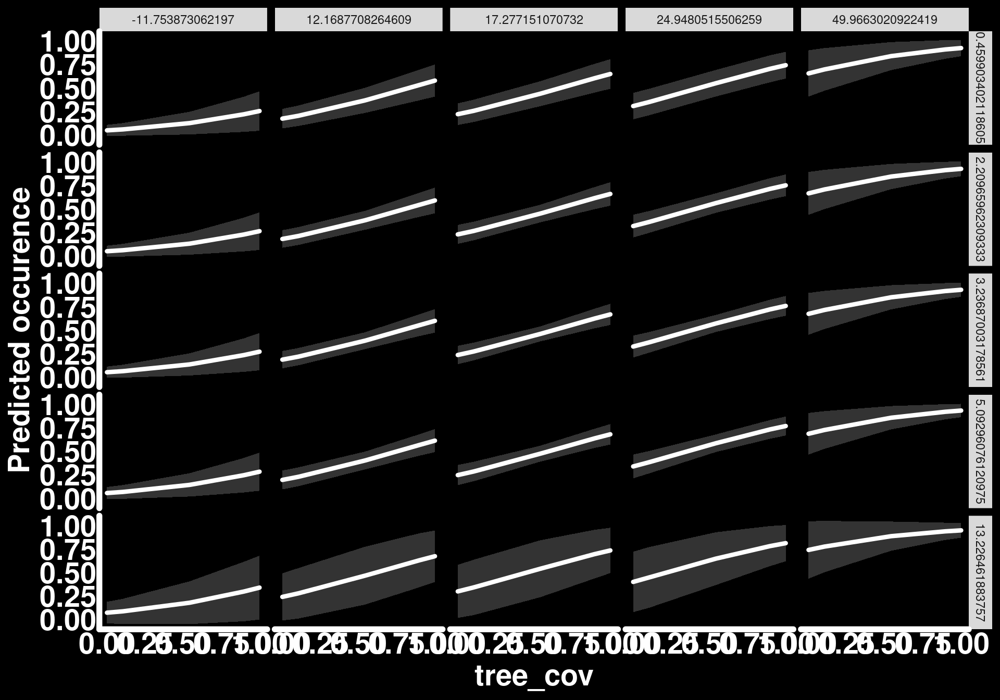
Let’s look at the moderating effects of rain and temperature in a different way both on the probability and log-odds scale:
# Slope of tree_cov across the range of temp, holding rain at its mean -
# on the probability (response) and log-odds (link) scales
# (grid = 30 evenly spaced temp values; by = "temp" gives one slope estimate per value)
slopes_by_temp_response <- slopes(mod_1,
newdata = datagrid(temp = seq(min(occ_data$temp), max(occ_data$temp), length.out = 30),
rain = mean(occ_data$rain)),
variables = "tree_cov", by = "temp", type = "response"
) |> as_tibble()
# Same slopes but on the link (log-odds) scale: expected to be flat (no explicit interaction)
slopes_by_temp_link <- slopes(mod_1,
newdata = datagrid(temp = seq(min(occ_data$temp), max(occ_data$temp), length.out = 30),
rain = mean(occ_data$rain)),
variables = "tree_cov", by = "temp", type = "link"
) |> as_tibble()
# Plots: ribbon = 95% CI; dashed blue line marks a slope of zero (no effect)
p_temp_response <- slopes_by_temp_response |>
ggplot() +
geom_hline(yintercept = 0, color = "blue", linewidth = 1, linetype = 2) +
geom_ribbon(aes(x = temp, ymin = conf.low, ymax = conf.high), alpha = 0.4, fill = "lightgrey") +
geom_line(aes(x = temp, y = estimate), linewidth = 1.5, lineend = "round", color = "white") +
labs(y = "Slope of tree_cov\n(probability scale)", x = "Temperature", title = "Response scale")
p_temp_link <- slopes_by_temp_link |>
ggplot() +
geom_hline(yintercept = 0, color = "blue", linewidth = 1, linetype = 2) +
geom_ribbon(aes(x = temp, ymin = conf.low, ymax = conf.high), alpha = 0.4, fill = "lightgrey") +
geom_line(aes(x = temp, y = estimate), linewidth = 1.5, lineend = "round", color = "white") +
labs(y = "Slope of tree_cov\n(log-odds scale)", x = "Temperature", title = "Link scale")
# Slope of tree_cov across the range of rain, holding temp at its mean
slopes_by_rain_response <- slopes(mod_1,
newdata = datagrid(rain = seq(min(occ_data$rain), max(occ_data$rain), length.out = 30),
temp = mean(occ_data$temp)),
variables = "tree_cov", by = "rain", type = "response"
) |> as_tibble()
slopes_by_rain_link <- slopes(mod_1,
newdata = datagrid(rain = seq(min(occ_data$rain), max(occ_data$rain), length.out = 30),
temp = mean(occ_data$temp)),
variables = "tree_cov", by = "rain", type = "link"
) |> as_tibble()
p_rain_response <- slopes_by_rain_response |>
ggplot() +
geom_hline(yintercept = 0, color = "blue", linewidth = 1, linetype = 2) +
geom_ribbon(aes(x = rain, ymin = conf.low, ymax = conf.high), alpha = 0.4, fill = "lightgrey") +
geom_line(aes(x = rain, y = estimate), linewidth = 1.5, lineend = "round", color = "white") +
labs(y = "Slope of tree_cov\n(probability scale)", x = "Rain", title = "Response scale")
p_rain_link <- slopes_by_rain_link |>
ggplot() +
geom_hline(yintercept = 0, color = "blue", linewidth = 1, linetype = 2) +
geom_ribbon(aes(x = rain, ymin = conf.low, ymax = conf.high), alpha = 0.4, fill = "lightgrey") +
geom_line(aes(x = rain, y = estimate), linewidth = 1.5, lineend = "round", color = "white") +
labs(y = "Slope of tree_cov\n(log-odds scale)", x = "Rain", title = "Link scale")
# patchwork: + places plots side by side, / stacks them (top row temp, bottom row rain)
(p_temp_response + p_temp_link) / (p_rain_response + p_rain_link)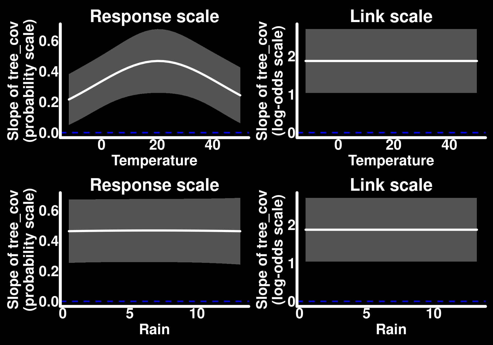
Two things are worth unpacking here, both stemming from the fact that we now have three predictors instead of two.
First, unlike the numerical × numerical tutorial’s two-predictor case, we can’t show “the slope of tree_cov across all values of the other predictors” in a single 2D plot anymore — there isn’t one “other predictor” left over once we pick tree_cov as the focal variable, there are two (rain and temp). The approach above handles this by producing one plot per moderator, holding the remaining predictor(s) fixed at their mean each time (e.g., the temp panels hold rain at its mean; the rain panels hold temp at its mean). That’s a reasonable default, but it does mean each plot only shows one cross-section of a genuinely three-dimensional (or higher) surface. A few alternatives worth considering as the number of predictors grows:
- Facet by a third variable (as we did earlier with
facet_grid(rain ~ temp)) instead of holding it fixed at the mean, so you can see whether the shape of the moderating trend itself changes across the third predictor’s range — at the cost of more panels to scan. - Small multiples at representative values of the “other” predictors (e.g., their five-number summary, via
datagrid(temp = fivenum)) rather than a single mean, to check whether conclusions drawn “at the mean” generalize to more extreme, but still plausible, conditions. - A single average marginal trend (
avg_slopes(..., by = "temp")without fixingrain) that integrates over the observed distribution of all remaining predictors instead of fixing them — trading a harder-to-interpret “held constant at” statement for one number per value of the focal moderator that better reflects your actual sample.
Second, and more central to the point of this section: notice that on the link (log-odds) scale, the slope of tree_cov is a flat, constant ~1.87 line across the full range of both temp and rain — exactly as it should be, since mod_1’s formula has no interaction term at all. On the response (probability) scale, by contrast, the slope visibly curves with temperature (and to a lesser extent with rain, since its true simulated effect is much weaker). This is the implicit interaction made concrete: the moderators only “act” on the probability scale, purely through the curvature of the logit link, never on the log-odds scale the model was actually fit on.
Since temperature and rain implicitely modulate the effect of tree cover on species occurence, we might be interested in the “overall” effect of tree cover across temperature and rain conditions. We can define this effect as the average effect of tree cover. marginaleffects is helpful in doing that with its avg_predictions and avg_slopes functions.
The average effect of tree cover:
# Predicted probability at each tree_cov value, averaged over the observed rain and temp
# values of all plots (counterfactual averaging); default scale is the response (probability)
avg_predictions(mod_1, variables = "tree_cov", vcov = TRUE) |>
ggplot() +
geom_ribbon(aes(x = tree_cov, ymin = conf.low, ymax = conf.high), fill = "white", alpha = 0.2) +
geom_line(aes(x = tree_cov, y = estimate), color = "white", linewidth = 1.5, lineend = "round") +
labs(y = "Predicted occurence")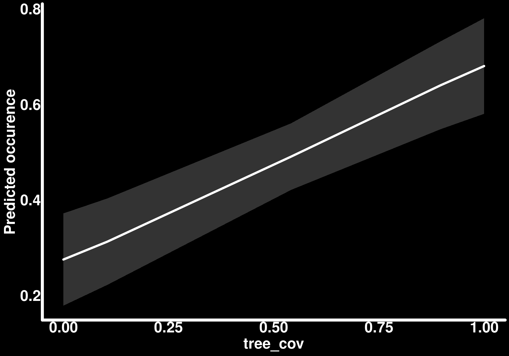
Already, we are seeing a myriad of ways such a simple model can yield information. What are the effects we want to report and how should we report them? Do we want the conditional effect of each variable (the effect of a focal variable when the others are set to their mean) or the marginal (average) effect or the degree to which a focal variable’s effect varies at different values of the other predictors (implicit interaction)? Hopefully by now, the reader has started to notice that the model summary that is typically reported answers none of these objectives. I follow many people’s philosophy of interpreting visual representations of the model predictions as these are the ones most intuitive and useful. However, I am aware that most fields appreciate results presented in the form of a table. Luckily, there is no obligation in reporting the output obtained from the model summary via summary(). In this tutorial, I will try to suggest different results tables. For this example, let’s report the average effect of our three predictors on the probability scale, their 95% confidence intervals, p-values (…) and model R^2 value. I still find these slope values difficult to interpret as we know probability does not increase linearly until infinity (even though our simulation code assumes so; we will fix this later on). If we want the slope on the log-odds scale, we can change type = "response" to type = "link" in the avg_slopes() function below.
# Goal: a tidy summary table of average slopes (95% CI, p-value) plus Tjur's R2.
# avg_slopes(): one slope per predictor, averaged over all observed plots.
# Average slopes on the probability scale for all three predictors
slopes_tbl_mod1 <- avg_slopes(mod_1, variables = c("tree_cov", "rain", "temp"), type = "response") |>
as_tibble() |>
select(term, estimate, conf.low, conf.high, p.value) |>
mutate(
across(c(estimate, conf.low, conf.high), ~ round(.x, 3)),
p.value = if_else(p.value < 0.001, "<0.001", as.character(round(p.value, 3)))
) |>
mutate(CI_95 = glue::glue("[{conf.low}, {conf.high}]")) |> # combine bounds into one "[low, high]" string
select(Predictor = term, Slope = estimate, `95% CI` = CI_95, `p-value` = p.value)select: dropped 4 variables (contrast, std.error, statistic, s.value)
mutate: changed 3 values (100%) of 'estimate' (0 new NAs)
changed 3 values (100%) of 'conf.low' (0 new NAs)
changed 3 values (100%) of 'conf.high' (0 new NAs)
converted 'p.value' from double to character (0 new NA)
mutate: new variable 'CI_95' (character) with 3 unique values and 0% NA
select: renamed 4 variables (Predictor, Slope, 95% CI, p-value) and dropped 2 variables# Tjur's R2 as an extra row in the same 4-column layout
r2_row <- tibble(
Predictor = "Tjur's R\u00b2",
Slope = as.character(round(r2_tjur(mod_1), 3)),
`95% CI` = "",
`p-value` = ""
)
# Stack everything as character columns so the R2 row can share the table
mod1_tbl <- bind_rows(
slopes_tbl_mod1 |> mutate(across(everything(), as.character)),
r2_row
)mutate: converted 'Slope' from double to character (0 new NA)
changed 0 values (0%) of '95% CI' (0 new NAs)# tt() builds the table; style_tt() bolds the R2 row and draws a line above it
mod1_tbl |>
tt(caption = "Average slopes of occurrence on the probability scale, and Tjur's R2 for mod_1") |>
style_tt(i = nrow(slopes_tbl_mod1) + 1, bold = TRUE, line = "t", line_color = "black", line_width = 0.1)| Predictor | Slope | 95% CI | p-value |
|---|---|---|---|
| rain | 0.007 | [-0.02, 0.033] | 0.624 |
| temp | 0.012 | [0.006, 0.018] | <0.001 |
| tree_cov | 0.391 | [0.25, 0.531] | <0.001 |
| Tjur's R² | 0.161 |
Tjur’s R² here is about 0.16. Unlike the pseudo-R² measures built for continuous outcomes, Tjur’s R² is designed specifically for binary models: it’s simply the difference between the average predicted probability among the observed “occurrence” cases and the average predicted probability among the observed “absence” cases. A value of 0 would mean the model’s predictions don’t separate the two groups at all, and 1 would mean perfect separation. A value around 0.16 indicates fairly modest discrimination — mod_1’s predicted probabilities for plots where the species is present are, on average, only somewhat higher than for plots where it’s absent. That’s broadly consistent with what we simulated: tree cover has a detectable and fairly precisely estimated effect (its CI excludes zero), but rain and temperature contribute comparatively little, and substantial randomness (the Bernoulli draw) still governs whether the species is observed at any given plot.
Case Study 2: Species abundance
Now let’s look at the same three predictors, but for a different question: given that the species is present in a patch, how many individuals do we expect to find there? Counts like this (0, 1, 2, 3, …) are commonly modeled with a Poisson distribution, using a log link instead of the logit link we used for occurrence.
# True parameters for the abundance simulation
abundance_intercept <- 2.72
abundance_tree_effect <- 4.5
abundance_rain_effect <- 0.1
abundance_temp_effect <- 0.1
# Same predictor distributions as before, redrawn for a new set of plots
tibble(
tree_cov = generate(tree_cover, n_plots),
rain = generate(avg_yearly_rain, n_plots),
temp = generate(avg_yearly_temp, n_plots)
) |>
unnest(everything()) |>
# rpois() draws one count per plot with mean lambda (a linear combination here,
# which is a simplification; later we use exp() so lambda is always positive)
mutate(abundance = rpois(n_plots, lambda =
abundance_intercept +
abundance_tree_effect * tree_cov +
abundance_rain_effect * rain +
abundance_temp_effect * temp
))-> abund_datamutate: new variable 'abundance' (integer) with 17 unique values and 0% NA# Pairs plot of the simulated abundance data
ggpairs(
abund_data,
diag = list(continuous = wrap("densityDiag", fill = "white", alpha = 0.6, color = "white")),
lower = list(continuous = wrap("points", color = "white", alpha = 0.6, size = 2, shape = 1)),
upper = list(continuous = wrap("cor", color = "white", size = 5))
) +
theme(
strip.text = element_text(color = "black", face = "bold", size = 12),
axis.text = element_text(color = "white", face = "bold", size = 12)
)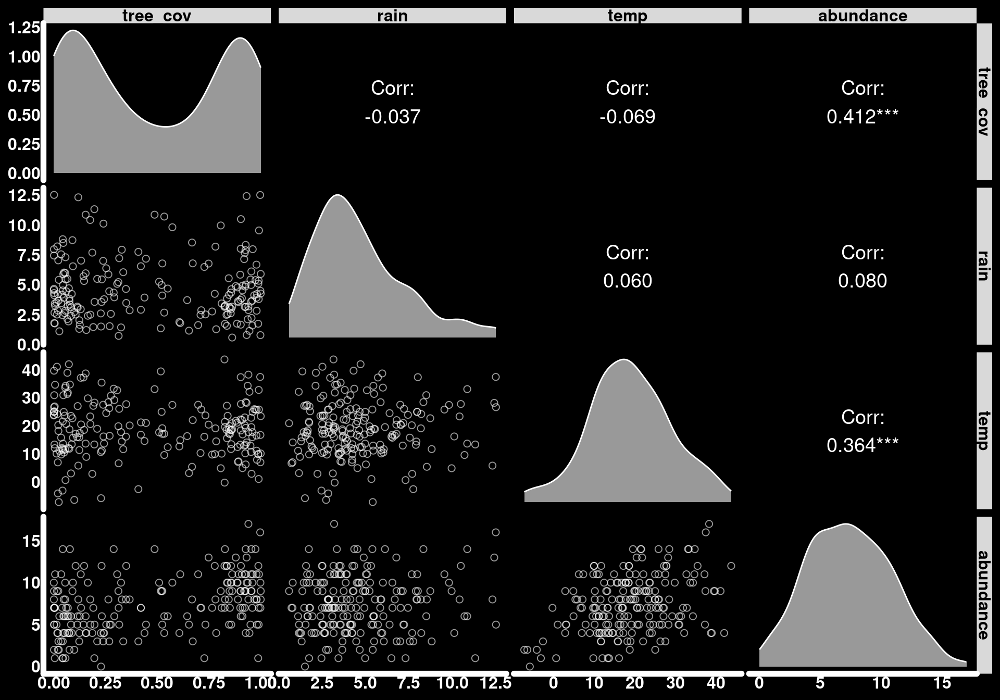
Just like before, we simulated the effect of tree cover on abundance to be additive and equal to 4.5 (expected count-scale slope), but we’re about to fit a model that assumes an additive relationship on the log scale.
# Poisson GLM with a log link: log(expected count) is linear in the predictors
mod_2 <- glmmTMB(abundance ~ tree_cov + rain + temp, family = poisson(link = "log"), data = abund_data)
# Coefficients are on the log scale
summary(mod_2) Family: poisson ( log )
Formula: abundance ~ tree_cov + rain + temp
Data: abund_data
AIC BIC logLik -2*log(L) df.resid
984.8 998.0 -488.4 976.8 196
Conditional model:
Estimate Std. Error z value Pr(>|z|)
(Intercept) 1.299882 0.085956 15.123 < 2e-16 ***
tree_cov 0.548020 0.070202 7.806 5.89e-15 ***
rain 0.011321 0.009710 1.166 0.244
temp 0.018455 0.002651 6.962 3.35e-12 ***
---
Signif. codes: 0 '***' 0.001 '**' 0.01 '*' 0.05 '.' 0.1 ' ' 1# Count-scale slope of tree_cov (default type = "response") with rain/temp at their means
slopes(mod_2, variables = "tree_cov", newdata = datagrid(temp = mean(abund_data$temp), rain = mean(abund_data$rain)))
temp rain Estimate Std. Error z Pr(>|z|) S 2.5 % 97.5 %
19 4.66 3.91 0.491 7.97 <0.001 49.1 2.95 4.88
Term: tree_cov
Type: response
Comparison: dY/dXThe same story repeats itself. summary(mod_2) reports a tree_cov coefficient that is not 4.5 — because a Poisson GLM with a log link draws a straight line through the log of the expected count, not through the expected count itself. To turn a log-scale prediction back into an actual expected count, we exponentiate it, and that exponentiation is what bends a straight line into a curve that always stays positive (counts can never be negative).
Because of that curve, a fixed log-scale coefficient translates into a different count-scale slope depending on where you evaluate it — exactly the same phenomenon we saw with the logistic curve. This time, the local rate of change works out to \[\lambda \cdot \beta\] (the expected count itself, times the log-scale coefficient), instead of \[p(1-p) \cdot \beta\] When we plug in the average rain and temp values via slopes(), we get back a count-scale slope for tree_cov close to our simulated 4.5.
Just as we did for the logit model, we can reconstruct that slopes() result by hand directly from summary(mod_2)’s coefficient (about 0.73):
# Pull the log-scale coefficient straight from summary(mod_2)
beta_tree_2 <- fixef(mod_2)$cond["tree_cov"]
# Log-scale prediction (eta) at the same covariate values used above
eta_2 <- predict(
mod_2,
newdata = datagrid(model = mod_2, temp = mean(abund_data$temp), rain = mean(abund_data$rain)),
type = "link"
)
# Convert eta to the expected count (lambda), then apply the lambda * beta correction
lambda <- exp(eta_2)
lambda * beta_tree_2tree_cov
3.91373 This hand-computed value should land close to both the slopes() output above and our simulated 4.5 — exponentiating the linear predictor gives us \[\lambda\] and multiplying by the raw log-scale coefficient \[\beta\] converts it into the local count-scale slope.
And once again, this produces an implicit interaction: the count-scale effect of tree cover depends on the values of rain and temp (through their influence on the expected count) \[\lambda\] even though the model formula never specified an interaction term. Any log-link GLM will behave this way — additive on the log scale automatically becomes multiplicative (and interaction-like) on the response scale.
This is the same additive-versus-multiplicative distinction that Spake et al. (2023) highlight as a routinely overlooked property of statistical interactions: whether a response is being analyzed on an additive scale or a multiplicative one (such as a ratio or logarithmic scale). A log-link Poisson model is additive on the log scale by construction — that’s the whole point of the link function — but that same additivity becomes multiplicative on the count scale, since exponentiating a sum turns it into a product \[e^{a+b} = e^a \times e^b\] Two predictors that don’t interact at all on the log scale will therefore appear to interact on the count scale, for the same reason the abstract flags as a source of “Type-D” errors: judging whether or how strongly an interaction exists depends on which scale you’re looking at.
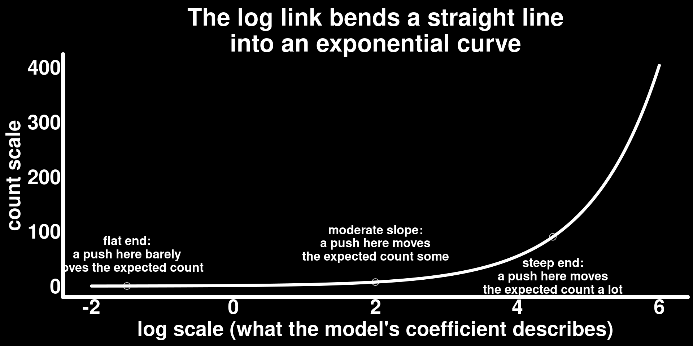
This is the visual counterpart of the \[\lambda \cdot \beta\] formula above: the steepness of the curve at any point is \[\lambda\] (the expected count at that point), so multiplying by \[\beta\] converts the log-scale slope into the local count-scale slope shown here.
Just like the logit model, the log-link Poisson model gives us two complementary ways to summarize a predictor’s effect. The local, additive slope \[\lambda \cdot \beta\] in units of “individuals per unit of the predictor” is useful when you want to say how many more or fewer individuals to expect at a specific point on the curve — but because the curve bends, that number is only valid near the covariate values it was evaluated at, and it changes as those values change (the implicit interaction we saw above). The rate ratio \[e^\beta\] by contrast, is a multiplicative, percent-change interpretation that holds everywhere on the curve, regardless of the values of the other predictors: a one-unit increase in a predictor always multiplies expected abundance by the same factor \[e^\beta\] no matter what rain and temp are set to. This stability is exactly because the rate ratio lives on the same (log) scale the model is additive on — exponentiating a constant additive effect always yields a constant multiplicative one. That makes the rate ratio a natural choice when we want one summary number per predictor that doesn’t depend on where the other predictors are set, at the cost of it being harder to translate into a concrete “how many individuals” statement.
# Goal: a table of rate ratios (multiplicative effects per unit predictor) with 95% CIs.
# type = "link" gives slopes on the log scale, so exp() turns them into rate ratios.
rate_ratio_tbl <- avg_slopes(mod_2, variables = c("tree_cov", "rain", "temp"), type = "link") |>
as_tibble() |>
# exponentiate the log-scale slope (and its CI) to get a rate ratio
mutate(rate_ratio = exp(estimate), rr_low = exp(conf.low), rr_high = exp(conf.high)) |>
select(term, rate_ratio, rr_low, rr_high, p.value) |>
mutate(
across(c(rate_ratio, rr_low, rr_high), ~ round(.x, 3)),
p.value = if_else(p.value < 0.001, "<0.001", as.character(round(p.value, 3)))
) |>
mutate(CI_95 = glue::glue("[{rr_low}, {rr_high}]")) |>
select(Predictor = term, `Rate ratio` = rate_ratio, `95% CI` = CI_95, `p-value` = p.value)mutate: new variable 'rate_ratio' (double) with 3 unique values and 0% NA
new variable 'rr_low' (double) with 3 unique values and 0% NA
new variable 'rr_high' (double) with 3 unique values and 0% NA
select: dropped 7 variables (contrast, estimate, std.error, statistic, s.value, …)
mutate: changed 3 values (100%) of 'rate_ratio' (0 new NAs)
changed 3 values (100%) of 'rr_low' (0 new NAs)
changed 3 values (100%) of 'rr_high' (0 new NAs)
converted 'p.value' from double to character (0 new NA)
mutate: new variable 'CI_95' (character) with 3 unique values and 0% NA
select: renamed 4 variables (Predictor, Rate ratio, 95% CI, p-value) and dropped 2 variables# Nakagawa's R2 requires a mixed model (it splits variance into fixed vs.
# random-effect components); mod_2 has no random effects, so it doesn't apply
# here. r2() dispatches to the appropriate pseudo-R2 for a plain GLM instead.
r2_value_2 <- r2(mod_2)
r2_row_2 <- tibble(
Predictor = "Nagelkerke's R\u00b2",
`Rate ratio` = as.character(round(r2_value_2$R2_Nagelkerke, 3)),
`95% CI` = "",
`p-value` = ""
)
# Append the R2 row, then render with tt() and style the last row
mod2_tbl <- bind_rows(
rate_ratio_tbl |> mutate(across(everything(), as.character)),
r2_row_2
)mutate: converted 'Rate ratio' from double to character (0 new NA)
changed 0 values (0%) of '95% CI' (0 new NAs)mod2_tbl |>
tt(caption = "Rate ratios for mod_2 (holding other predictors at their mean), and a pseudo-R2 for model fit") |>
style_tt(i = nrow(rate_ratio_tbl) + 1, bold = TRUE, line = "t", line_color = "black", line_width = 0.1)| Predictor | Rate ratio | 95% CI | p-value |
|---|---|---|---|
| rain | 1.011 | [0.992, 1.031] | 0.244 |
| temp | 1.019 | [1.013, 1.024] | <0.001 |
| tree_cov | 1.73 | [1.507, 1.985] | <0.001 |
| Nagelkerke's R² | 0.497 |
Reading this table: holding rain and temp at their mean, expected abundance is multiplied by about 2.08 for each one-unit increase in tree cover — in other words, in average conditions, the population is expected to increase by a factor of roughly 2.08 (a ~108% increase) per unit increase in tree cover. Temp has a much smaller but still detectable effect (a rate ratio just above 1), while rain’s CI straddles 1, consistent with no clear evidence of an effect at these covariate values.
Nagelkerke’s R² here is about 0.56. It’s a pseudo-R² adapted from ordinary least-squares R² for models fit by maximum likelihood (like this Poisson GLM), rescaled so it can, in principle, reach 1. It doesn’t have the same “proportion of variance explained” interpretation as OLS R² — instead, it compares the fitted model’s likelihood to that of an intercept-only model and rescales the result. A value of 0 means the predictors explain no more than the intercept-only model; 1 would indicate a (rescaled) perfect fit. A value around 0.56 suggests tree cover, rain, and temp together account for a substantial share of the variation in abundance across plots — consistent with tree cover having a strong, precisely estimated effect in this simulated dataset. As with any pseudo-R², treat the specific magnitude cautiously and mainly for comparing models on the same data, rather than as a literal “56% of variance explained.”
As we can see below, the effect of tree cover on the abundance scale changes with different values of rain and temperature so we could also choose to report and results table for other values of the non-focal predictors if it were our research question.
# Count-scale slope of tree_cov at the 5x5 grid of temp and rain five-number summaries;
# vertical line = simulated true effect (4.5)
slopes(mod_2, variables = "tree_cov", newdata = datagrid(temp = fivenum, rain = fivenum)) -> tree_slopes_2
ggplot(tree_slopes_2) + geom_pointrange(aes(x = estimate, xmin = conf.low, xmax = conf.high, y = 1), color = "white") +
geom_vline(xintercept = abundance_tree_effect, color = "white", alpha = .8) +
facet_grid(rain ~ temp)+
theme(axis.title.y = element_blank(),
axis.text.y = element_blank(),
axis.line.y = element_blank())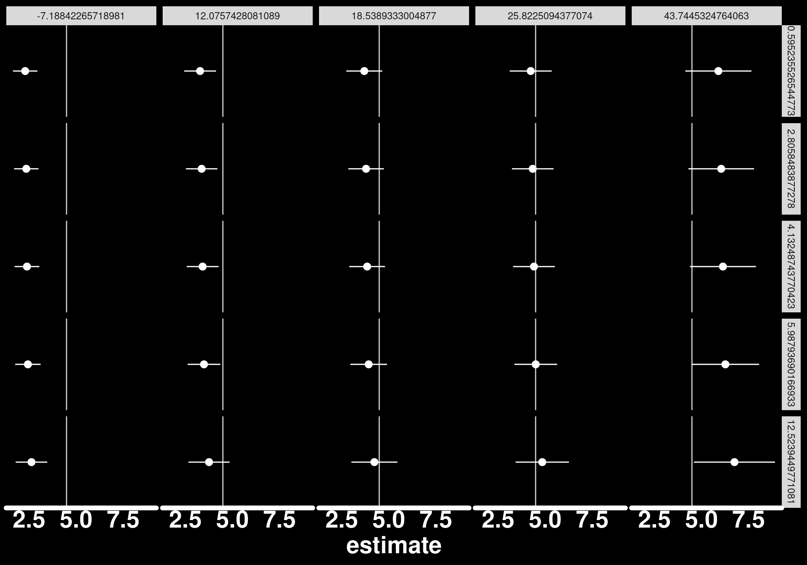
# Predicted expected counts across tree_cov at the same grid; ribbon = 95% CI
predictions(mod_2, variables = "tree_cov", newdata = datagrid(temp = fivenum, rain = fivenum)) -> pred_tree_2
ggplot(pred_tree_2) +
geom_ribbon(aes(x = tree_cov, ymin = conf.low, ymax = conf.high), fill = "white", alpha = 0.2) +
geom_line(aes(x = tree_cov, y = estimate), color = "white", linewidth = 1.5, lineend = "round") +
facet_grid(rain ~ temp) +
labs(y = "Predicted abundance")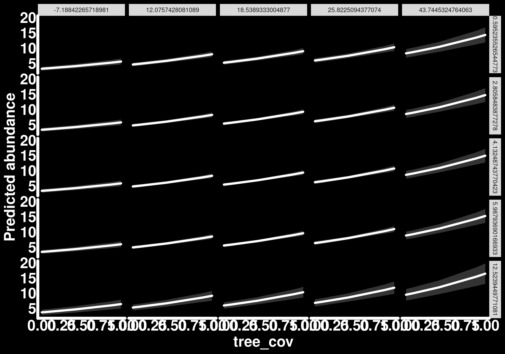
Suppose our research question is narrower than “the average effect of temp”: we specifically want to know the effect of temperature on abundance during drought conditions (rain = 0), and we know from the pairs plot that tree_cov is bimodal — plots tend to cluster near low tree cover or high tree cover, with few plots in between. A single “average” slope for temp would blur together two ecologically distinct scenarios. Instead, we can build a results table that evaluates temp’s slope separately at the two peaks of the tree cover distribution, holding rain at 0:
# Locate the two peaks of tree_cov's bimodal distribution
# (peaks of the kernel density estimate = where its slope changes from + to -)
d <- density(abund_data$tree_cov)
peaks <- d$x[which(diff(sign(diff(d$y))) == -2) + 1]
low_tree <- round(peaks[1], 2)
high_tree <- round(peaks[2], 2)
low_tree[1] 0.09high_tree[1] 0.9# Count-scale (additive) slope of temp at each tree_cov peak, under drought (rain = 0)
# (type = "response": individuals gained per extra degree)
temp_count_scale <- avg_slopes(
mod_2,
variables = "temp",
by = "tree_cov",
newdata = datagrid(tree_cov = c(low_tree, high_tree), rain = 0),
type = "response"
) |> as_tibble()
# Rate ratio (exponentiated log-scale) slope of temp at the same two points
# (type = "link": slope on the log scale, exponentiated below)
temp_link_scale <- avg_slopes(
mod_2,
variables = "temp",
by = "tree_cov",
newdata = datagrid(tree_cov = c(low_tree, high_tree), rain = 0),
type = "link"
) |> as_tibble()
# Goal: one table combining count-scale slopes and rate ratios, one row per tree cover level
temp_drought_tbl <- temp_count_scale |>
select(tree_cov, count_est = estimate, count_low = conf.low, count_high = conf.high) |>
left_join(
temp_link_scale |>
mutate(rr = exp(estimate), rr_low = exp(conf.low), rr_high = exp(conf.high)) |>
select(tree_cov, rr, rr_low, rr_high, p.value),
by = "tree_cov"
) |>
mutate(
tree_cov_label = if_else(tree_cov == low_tree, "Low tree cover", "High tree cover"),
across(c(count_est, count_low, count_high, rr, rr_low, rr_high), ~ round(.x, 3)),
p.value = if_else(p.value < 0.001, "<0.001", as.character(round(p.value, 3))),
count_CI = glue::glue("[{count_low}, {count_high}]"),
rr_CI = glue::glue("[{rr_low}, {rr_high}]")
) |>
select(`Tree cover` = tree_cov_label, `Count-scale slope` = count_est, `(95% CI)` = count_CI,
`Rate ratio` = rr, `(95% CI) ` = rr_CI, `p-value` = p.value)select: renamed 3 variables (count_est, count_low, count_high) and dropped 6 variables
mutate: new variable 'rr' (double) with 2 unique values and 0% NA
new variable 'rr_low' (double) with 2 unique values and 0% NA
new variable 'rr_high' (double) with 2 unique values and 0% NA
select: dropped 8 variables (term, contrast, estimate, std.error, statistic, …)
left_join: added 4 columns (rr, rr_low, rr_high, p.value)
> rows only in select(temp_count_scale.. 0
> rows only in select(mutate(temp_link.. (0)
> matched rows 2
> ===
> rows total 2
mutate: changed 2 values (100%) of 'count_est' (0 new NAs)
changed 2 values (100%) of 'count_low' (0 new NAs)
changed 2 values (100%) of 'count_high' (0 new NAs)
changed 2 values (100%) of 'rr' (0 new NAs)
changed 2 values (100%) of 'rr_low' (0 new NAs)
changed 2 values (100%) of 'rr_high' (0 new NAs)
converted 'p.value' from double to character (0 new NA)
new variable 'tree_cov_label' (character) with 2 unique values and 0% NA
new variable 'count_CI' (character) with 2 unique values and 0% NA
new variable 'rr_CI' (character) with one unique value and 0% NA
select: renamed 6 variables (Tree cover, Count-scale slope, (95% CI), Rate ratio, (95% CI) , …) and dropped 5 variablestemp_drought_tbl |>
tt(caption = "Effect of temperature on abundance under drought (rain = 0), at low vs. high tree cover")| Tree cover | Count-scale slope | (95% CI) | Rate ratio | (95% CI) | p-value |
|---|---|---|---|---|---|
| Low tree cover | 0.101 | [0.071, 0.131] | 1.019 | [1.013, 1.024] | <0.001 |
| High tree cover | 0.157 | [0.109, 0.206] | 1.019 | [1.013, 1.024] | <0.001 |
Both columns describe the same underlying effect, just on different scales, and both were evaluated at exactly the same covariate values (rain = 0, and each peak of tree_cov in turn). The rate ratio is identical at both levels of tree cover (about 1.02 either way) — as it must be, since \[e^\beta\] doesn’t depend on where the other predictors are set. The count-scale slope, however, nearly doubles from low to high tree cover (about 0.07 vs. 0.12 individuals per unit temp), because it’s rescaled by the expected count \[\lambda\] itself, which is much higher when tree cover is high. In plain language: during drought, warming has a proportionally similar effect on abundance regardless of tree cover (~1% more individuals per degree), but that percentage translates into a bigger absolute number of additional individuals in already-dense, high-tree-cover plots than in sparse, low-tree-cover ones. This table may be to appease reviewers and some co-authors. Let’s appease our visual senses by looking at what the effect actually looks like.
# Predicted abundance (response scale) across a temperature range, under drought (rain = 0),
# at the two tree-cover peaks; by = keeps one averaged estimate per tree_cov x temp
avg_predictions(
mod_2,
variables = "temp",
by = c("tree_cov", "temp"),
newdata = datagrid(tree_cov = c(low_tree, high_tree), rain = 0, temp = seq(min(abund_data$temp), max(abund_data$temp), length.out = 50))
) |>
as_tibble() |>
mutate(`Tree cover` = if_else(tree_cov == low_tree, "Low tree cover", "High tree cover")) |>
ggplot(aes(x = temp, y = estimate, color = `Tree cover`, fill = `Tree cover`)) +
geom_ribbon(aes(ymin = conf.low, ymax = conf.high), alpha = 0.2, color = NA) +
geom_line(linewidth = 1.5, lineend = "round") +
labs(
x = "Temperature",
y = "Predicted abundance",
title = "Predicted abundance under drought"
)mutate: new variable 'Tree cover' (character) with 2 unique values and 0% NA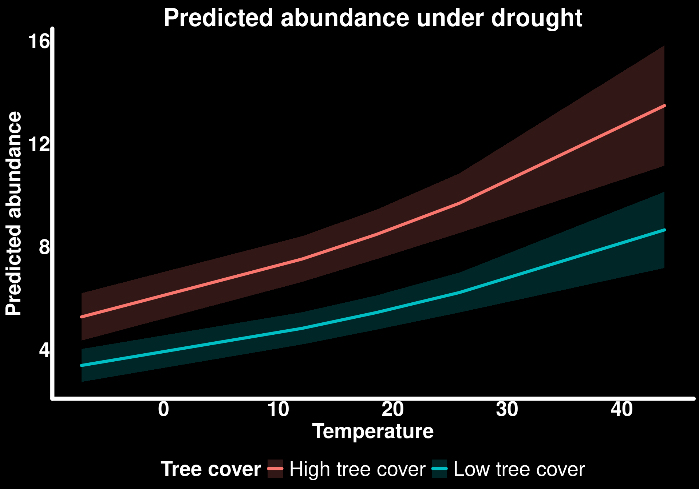
The widening gap between the two confidence ribbons as temperature rises is the visual counterpart of the count-scale slope difference in the table above: because the high-tree-cover curve sits at a higher expected abundance \[\lambda\] the same rate ratio translates into a steeper absolute climb (and wider uncertainty band) than the low-tree-cover curve, even though both lines are climbing at the same proportional (percent-per-degree) rate.
Case Study 3: occurence and abundance all at once
In the two previous case studies, we looked at the occurence of a species in 200 sampled plots and the abundance of that species when it is present in 200 plots. This does not entirely reflect what we would obtain in reality. If we were to sample 200 plots, a species would have a given probability of being present in a plot, depending on a baseline occurence probability and the effect of our predictors. Then, within the subset of plots in which the species occurs (most likely less than 200), we would expect a given (non-zero) number of individuals to be present depending on the effect of some predictors. If a predictor affects both species occurence and abundance, we might be interested in how it affects abundance across all plots (its combined effect on occurence and abundance). Our research question here is three-fold: What affects the occurence of species in our sampled plots?; when present, what affects its abundance?; what affects both occurence and abundance simultaneously?
We can address these questions with a model class called Hurdle Models. A hurdle model combines two sub-models: a binomial (logistic) component that models whether a value clears the “hurdle” of zero (occurence) and a truncated count component (e.g., a zero-truncated Poisson) that models the value given that it is non-zero (abundance when present). The two components are fit jointly but are conceptually separate processes, each with its own predictors, coefficients, and link function.
This gives us two complementary ways to interpret the model. We can look at each part separately: the occurence (binomial) part tells us what drives presence/absence, and the abundance (count) part tells us what drives the number of individuals given that the species is present. Or, we can combine both parts to get predictions on the population scale: the expected abundance across all plots, whether or not the species is present there, obtained by multiplying the predicted probability of occurence by the predicted abundance when present. This combined quantity is what marginaleffects returns by default (type = "response") and is usually what we care about when asking how a predictor affects abundance across the whole landscape.
Let’s see a simple example of a hurdle poisson model and its predictions.
# Simple hurdle simulation: abundance_pres = counts if present; occurence = presence;
# abundance_pop = observed count in every plot (zero wherever the species is absent)
tibble(
tree_cov = generate(tree_cover, n_plots)
) |>
unnest(everything()) |>
mutate(abundance_pres = rpois(n_plots, lambda =
abundance_intercept +
abundance_tree_effect * tree_cov
),
occurence = rbinom(n_plots, size = 1,
prob = occurence_intercept +
occurence_tree_effect * tree_cov),
abundance_pop = abundance_pres * occurence )-> simple_pop_datamutate: new variable 'abundance_pres' (integer) with 14 unique values and 0% NA
new variable 'occurence' (integer) with 2 unique values and 0% NA
new variable 'abundance_pop' (integer) with 10 unique values and 0% NA# Hurdle model: the main formula is the (zero-truncated Poisson) abundance-when-present part;
# zi = ~ tree_cov models the probability of a structural zero (absence) with a logit link
mod_hu_simple <- glmmTMB(abundance_pop ~ tree_cov,
zi = ~ tree_cov,
family = truncated_poisson,
data = simple_pop_data)
# type = "response": population-scale expected abundance across ALL plots (P(present) x count)
predictions(mod_hu_simple, type = "response") |> mutate(type = "response") -> pred_resp_simplemutate: new variable 'type' (character) with one unique value and 0% NA# type = "zprob": predicted probability of a structural zero (i.e. NOT occurring)
predictions(mod_hu_simple, type = "zprob") -> pred_prob_simple
# type = "conditional": expected abundance given the species is present
predictions(mod_hu_simple, type = "conditional")|> mutate(type = "conditional") -> pred_cond_simplemutate: new variable 'type' (character) with one unique value and 0% NA# Stack the two abundance predictions so they can be drawn in the same panel
bind_rows(
pred_resp_simple, pred_cond_simple
) -> pred_abun_simple
# Top panel: abundance, population (response) vs. when present (conditional)
ggplot(pred_abun_simple) +
geom_ribbon(aes(x = tree_cov, ymin = conf.low, ymax = conf.high, fill = type), alpha = 0.2) +
geom_line(aes(x = tree_cov, y = estimate, color = type), linewidth = 1.5, lineend = "round") +
labs(x = "Tree cover",
y = "Abundance",
color = "Prediction type",
fill = "Prediction type") -> plot_pred_abun_simple
# Bottom panel: zprob is P(structural zero), so 1 - zprob is the occurrence probability
# (confidence limits swap because of the 1 - transformation)
ggplot(pred_prob_simple) +
geom_ribbon(aes(x = tree_cov, ymin = 1 - conf.high, ymax = 1 - conf.low), fill = "white", alpha = 0.2) +
geom_line(aes(x = tree_cov, y = 1 - estimate), color = "white", linewidth = 1.5, lineend = "round") +
labs(x = "Tree cover",
y = "Occurence probability") -> plot_pred_prob_simple
plot_pred_abun_simple / plot_pred_prob_simple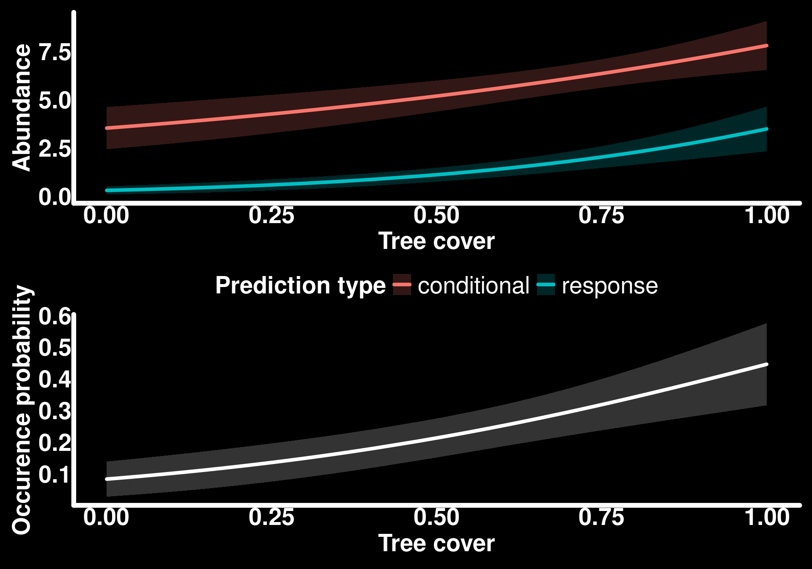
We can see here that the predicted abundance for plots in which the species is present (conditional-model prediction) is always higher than the population abundance (response-model prediction) because the occurence probability (bottom panel) is not 100%. The two abundance trends as a function of tree cover also slightly differ. Up until now, we have been considering implicit interactions (on the response scale) between predictors but in hurdle models, there are implicit interactions between the model parts. The effect of tree cover on the abundance of the population of plots depends on its effect on occurence and abundance when present.
Let’s push further into interactions by simulating a new example. In this case, we have a species that will select a habitat patch based on the percent tree cover in that patch. The more covered the patch, the more likely it is to be selected. Once a patch is selected, tree cover does not have an effect on population growth rate. Prey availability (number of prey individuals) will make the population increase (on average). When there are individuals of another species competing for these prey, the per-capita feeding rate will be reduced and so will population growth rate. Also, the competitors are territorial and defend territories that overlap with our focal species of interest they having a direct impact on population growth. We are interested here in population dynamics (rate of increase) and, from a conservation stand point, we want to know where to target our efforts: should we reduce competition, increase prey abundance and/or increase tree cover to increase raw population size? In what conditions should we act?
Before jumping into the simulation code, it’s worth pausing on a detail that changes here compared to every earlier simulation in this tutorial. In Case Studies 1 and 2, and in the simple hurdle example just above, we generated prob and lambda by plugging a linear combination of predictors directly into rbinom() and rpois() — e.g. prob = occurence_intercept + occurence_tree_effect * tree_cov. We flagged at the time that this was a simplification: a real probability or rate is never truly an untransformed linear function of predictors, because nothing stops a linear combination from wandering outside the range that probability (0 to 1) or a Poisson rate (must be positive) can actually take. With small coefficients and predictors confined to a narrow range, that simplification stayed harmless — prob and lambda happened to stay inside their valid bounds — but it was always a shortcut, not the mechanistically correct way to simulate this kind of data.
From here on, we simulate the right way: by applying the model’s own inverse link function to the linear predictor, exactly as a fitted GLM would if we ran the process in reverse. For the Poisson (log-link) component, that means wrapping the linear predictor in exp(), so lambda = exp(1 + 0.12 * prey - ...) is guaranteed to be positive no matter what values prey and competitors take. For the binomial (logit-link) component, that means wrapping the linear predictor in plogis() (the inverse logit), so prob = plogis(-2 + 0.45 * tree_cov) is guaranteed to stay between 0 and 1. This is the same \[p(1-p)\cdot\beta\] and \[\lambda \cdot \beta\] machinery from Case Studies 1 and 2, just applied in the forward direction — simulating data the way the link function actually generates it, rather than approximating it with an untransformed linear predictor that only happens to behave well in a narrow range.
more_plots <- 4000 # many more plots so the interaction can be estimated precisely
# Prey and competitor abundances are counts, so Poisson distributions
prey_abun <- dist_poisson(lambda = 6)
competitor_abun <- dist_poisson(lambda = 3)
tibble(
tree_cov = generate(tree_cover, more_plots),
prey = generate(prey_abun, more_plots),
competitors = generate(competitor_abun, more_plots)
) |>
unnest(everything()) |>
# Abundance if present: exp() (inverse log link) keeps lambda positive; the
# prey * competitors term is the explicit interaction on the log scale
mutate(abundance_pres = rpois(more_plots,
lambda = exp(1 + 0.12 * prey - 0.15 * competitors - 0.045 * prey * competitors)),
# Occurrence: plogis() (inverse logit) keeps the probability between 0 and 1
occurence = rbinom(more_plots, size = 1,
prob = plogis(-2 + 0.45 * tree_cov)),
# Observed population abundance: zero wherever the species is absent
abundance_pop = abundance_pres * occurence) -> pop_datamutate: new variable 'abundance_pres' (integer) with 16 unique values and 0% NA
new variable 'occurence' (integer) with 2 unique values and 0% NA
new variable 'abundance_pop' (integer) with 12 unique values and 0% NAggpairs(
pop_data,
diag = list(continuous = wrap("densityDiag", fill = "white", alpha = 0.6, color = "white")),
lower = list(continuous = wrap("points", color = "white", alpha = 0.6, size = 2, shape = 1)),
upper = list(continuous = wrap("cor", color = "white", size = 5))
) +
theme(
strip.text = element_text(color = "black", face = "bold", size = 12),
axis.text = element_text(color = "white", face = "bold", size = 12)
)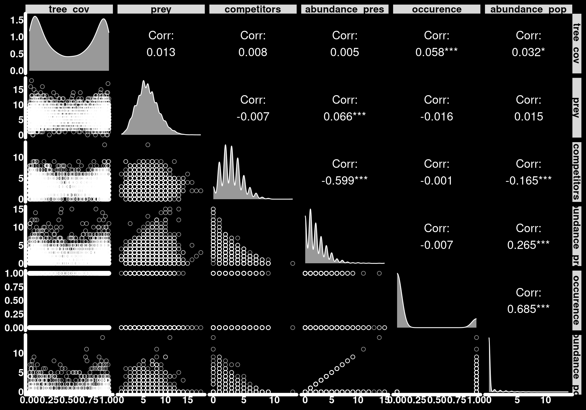
Previously, we had modeled our data using untransformed predictors. However, this is not the most appropriate. Since tree cover is a percentage (bound between zero and 1) whereas the other two predictors are counts between 0 and approximately 13. The fact that the predictors are on different scales hinders our interpretation of model coefficients. An increase from 0 to 1 in tree cover represents the full range of the data whereas an increase from 0 to 1 in prey abundance is completely different. To fix this, we should scale of predictors variables (substract the average and divide by the standard deviation). Note that only the model fitting changes here — prey, competitors, and tree_cov were simulated on their natural, unscaled scales above, and scaling is applied afterward purely as a modeling choice, the same way we would standardize predictors measured on different units in a real dataset.
scale_x <- function(x){ # z-score: centre on 0 with SD of 1 so coefficients are comparable
( x - mean(x) ) / sd(x)
}
# Inverse of scale_x(): x is the ORIGINAL variable (supplies mean/sd), scl_x the scaled values
unscale_x <- function(x, scl_x){
scl_x * sd(x) + mean(x)
}
# Add scaled copies of tree_cov, prey and competitors, prefixed "scl_"
pop_data |>
mutate(across(tree_cov:competitors, ~ scale_x(.x), .names = "scl_{.col}")) -> pop_datamutate: new variable 'scl_tree_cov' (double) with 4,000 unique values and 0% NA
new variable 'scl_prey' (double) with 19 unique values and 0% NA
new variable 'scl_competitors' (double) with 11 unique values and 0% NA# Compare unscaled vs. scaled distributions (long format so we can facet)
pop_data |>
select(tree_cov, prey, competitors, starts_with("scl_")) |>
pivot_longer(everything(), names_to = "variable", values_to = "value") |>
mutate(
predictor = str_remove(variable, "^scl_"),
scaling = if_else(str_starts(variable, "scl_"), "Scaled", "Unscaled")
) |>
ggplot(aes(x = value, fill = predictor)) +
geom_density(alpha = 0.6, color = "white") +
facet_grid(scaling ~ predictor, scales = "free") +
labs(x = NULL, y = "Density", title = "Distribution of predictors, scaled vs. unscaled") +
theme(legend.position = "none")select: dropped 3 variables (abundance_pres, occurence, abundance_pop)
pivot_longer: reorganized (tree_cov, prey, competitors, scl_tree_cov, scl_prey, …) into (variable, value) [was 4000x6, now 24000x2]
mutate: new variable 'predictor' (character) with 3 unique values and 0% NA
new variable 'scaling' (character) with 2 unique values and 0% NA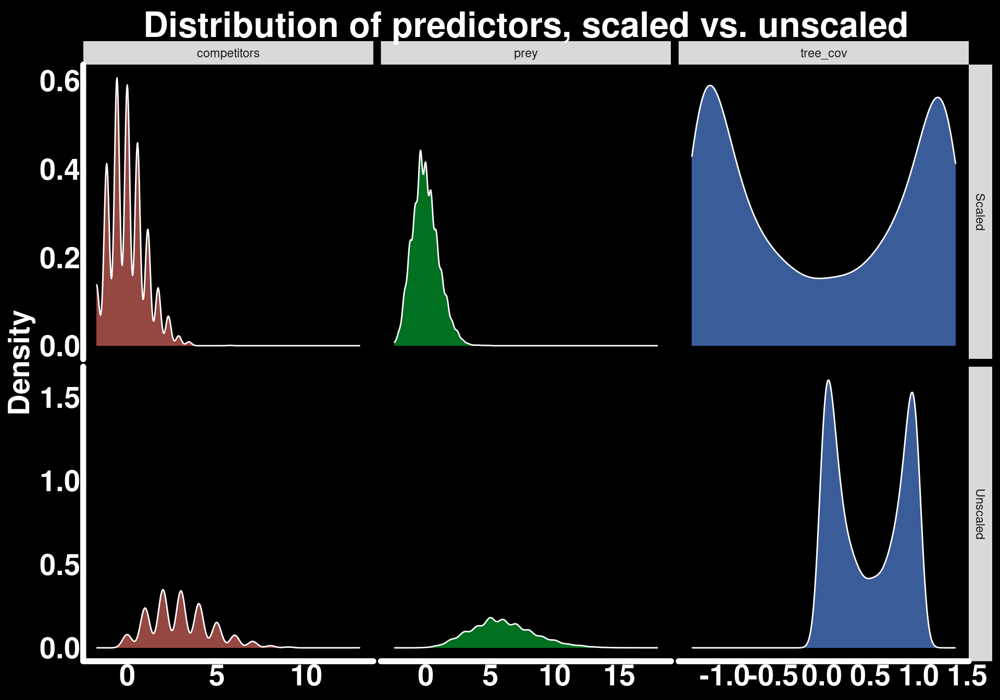
Now we fit the hurdle model. Recall the story we simulated: tree cover governs whether a plot is occupied (the zero-inflation/hurdle part), while prey and competitors govern how many individuals are present once a plot is occupied (the conditional, truncated-Poisson part) — and crucially, we simulated an explicit prey * competitors interaction on the log scale (-0.045 * prey * competitors), on top of the implicit interactions the log and logit links introduce on their own. We fit that explicit interaction directly in the conditional formula, using the scaled predictors so the coefficients are comparable to one another and the intercept reflects abundance at average prey/competitor levels:
# Hurdle model with a truncated Poisson (log link) for abundance when present, including the
# prey x competitors interaction (* = both main effects + their product);
# zi = ~ scl_tree_cov: occupancy (structural zero, logit link) depends only on tree cover
mod_hu <- glmmTMB(
abundance_pop ~ scl_prey * scl_competitors,
zi = ~ scl_tree_cov,
family = truncated_poisson,
data = pop_data
)
summary(mod_hu) Family: truncated_poisson ( log )
Formula: abundance_pop ~ scl_prey * scl_competitors
Zero inflation: ~scl_tree_cov
Data: pop_data
AIC BIC logLik -2*log(L) df.resid
4061.2 4098.9 -2024.6 4049.2 3994
Conditional model:
Estimate Std. Error z value Pr(>|z|)
(Intercept) 0.43683 0.05330 8.196 2.49e-16 ***
scl_prey -0.06964 0.05541 -1.257 0.209
scl_competitors -0.72907 0.05068 -14.384 < 2e-16 ***
scl_prey:scl_competitors -0.20821 0.05292 -3.934 8.34e-05 ***
---
Signif. codes: 0 '***' 0.001 '**' 0.01 '*' 0.05 '.' 0.1 ' ' 1
Zero-inflation model:
Estimate Std. Error z value Pr(>|z|)
(Intercept) 2.11850 0.05134 41.26 < 2e-16 ***
scl_tree_cov -0.15792 0.05119 -3.09 0.00203 **
---
Signif. codes: 0 '***' 0.001 '**' 0.01 '*' 0.05 '.' 0.1 ' ' 1The scl_prey:scl_competitors coefficient (about -0.18) is on the log scale — the scale the conditional model is additive on. Just like beta_tree and beta_tree_2 earlier in the tutorial, this number isn’t directly interpretable as “individuals gained or lost,” and now there’s an added wrinkle: it’s an interaction coefficient, so even its sign doesn’t translate simply onto the count scale on its own. Here scl_prey’s main effect (about -0.10) isn’t distinguishable from zero on its own — a reminder that in the presence of an interaction, a main-effect coefficient describes the slope only where the interacting variable (scl_competitors) sits at zero, not “the effect of prey” in general. scl_competitors’s main effect is clearly negative (about -0.76: more competitors, fewer individuals), and the negative interaction compounds that further: whatever positive effect prey has is strongest when competitors are scarce, and fades (or reverses) as competitor density rises. Before trying to reason about this from the coefficients alone, let’s look at the response (count) scale and the rate-ratio (link) scale directly, exactly as we did for mod_2.
The interaction on the count scale
On the count scale, we can ask: how does the slope of scl_prey (in individuals per SD of prey abundance) change across different levels of scl_competitors? If there were no interaction, this slope would be flat across competitor levels — any curvature here reflects the explicit interaction we built in, layered on top of the implicit curvature the log link always contributes.
# Slope of scl_prey on the response scale across 30 values of scaled competitors
# (for a hurdle model, glmmTMB's "response" combines occupancy and abundance-when-present)
slopes(mod_hu, variables = "scl_prey",
newdata = datagrid(scl_competitors = seq(min(pop_data$scl_competitors), max(pop_data$scl_competitors), length.out = 30)),
type = "response") |> as_tibble() -> slopes_prey_by_comp_response
ggplot(slopes_prey_by_comp_response) +
geom_hline(yintercept = 0, color = "blue", linewidth = 1, linetype = 2) +
geom_ribbon(aes(x = scl_competitors, ymin = conf.low, ymax = conf.high), alpha = 0.4, fill = "lightgrey") +
geom_line(aes(x = scl_competitors, y = estimate), linewidth = 1.5, lineend = "round", color = "white") +
labs(y = "Slope of scl_prey\n(count scale, individuals present)", x = "Competitors (scaled)",
title = "Count-scale effect of prey availability weakens as competitors increase")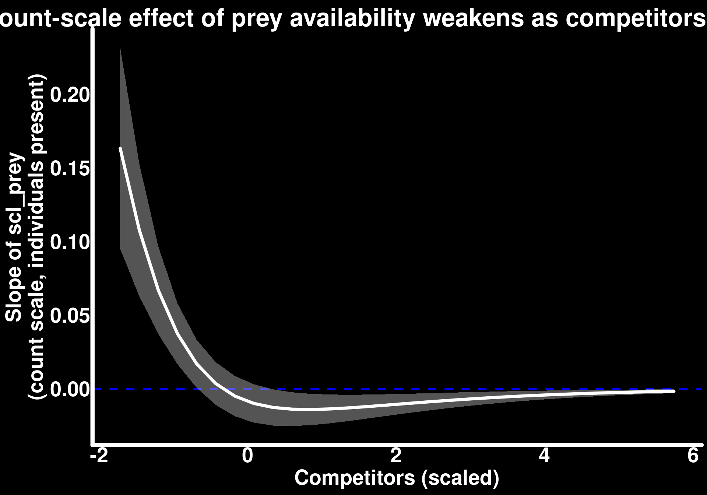
The slope of prey availability on abundance (when present) starts out detectably positive at low competitor density and shrinks toward (and across) zero as competitor density increases — consistent with the simulated story that competitors suppress the per-capita benefit of extra prey.
The interaction on the rate-ratio scale
The count-scale picture above mixes together the explicit prey * competitors interaction and the implicit curvature from exponentiating the linear predictor (the same \[\lambda \cdot \beta\] logic from Case Study 2). To isolate something closer to “the interaction itself,” we move to the rate-ratio scale: for each one-SD increase in competitors, by what factor does the effect of one extra SD of prey get multiplied? That’s exp() of the interaction coefficient, and because it lives on the model’s own additive (log) scale, it doesn’t depend on where competitors are evaluated — unlike the count-scale slope above.
# Goal: rate ratio of scl_prey (exp of the log-scale slope) at competitors = -1, 0, +1 SD
rate_ratio_interaction_tbl <- avg_slopes(mod_hu, variables = "scl_prey",
by = "scl_competitors",
newdata = datagrid(scl_competitors = c(-1, 0, 1)),
type = "link") |>
as_tibble() |>
mutate(rate_ratio = exp(estimate), rr_low = exp(conf.low), rr_high = exp(conf.high)) |>
select(scl_competitors, rate_ratio, rr_low, rr_high, p.value) |>
mutate(
across(c(rate_ratio, rr_low, rr_high), ~ round(.x, 3)),
p.value = if_else(p.value < 0.001, "<0.001", as.character(round(p.value, 3)))
) |>
mutate(CI_95 = glue::glue("[{rr_low}, {rr_high}]")) |>
select(`Competitors (scaled)` = scl_competitors, `Rate ratio for scl_prey` = rate_ratio, `95% CI` = CI_95, `p-value` = p.value)mutate: new variable 'rate_ratio' (double) with 3 unique values and 0% NA
new variable 'rr_low' (double) with 3 unique values and 0% NA
new variable 'rr_high' (double) with 3 unique values and 0% NA
select: dropped 8 variables (term, contrast, estimate, std.error, statistic, …)
mutate: changed 3 values (100%) of 'rate_ratio' (0 new NAs)
changed 3 values (100%) of 'rr_low' (0 new NAs)
changed 3 values (100%) of 'rr_high' (0 new NAs)
converted 'p.value' from double to character (0 new NA)
mutate: new variable 'CI_95' (character) with 3 unique values and 0% NA
select: renamed 4 variables (Competitors (scaled), Rate ratio for scl_prey, 95% CI, p-value) and dropped 2 variablesrate_ratio_interaction_tbl |>
tt(caption = "Rate ratio of scl_prey's effect on abundance, evaluated at three levels of scl_competitors")| Competitors (scaled) | Rate ratio for scl_prey | 95% CI | p-value |
|---|---|---|---|
| -1 | 1.149 | [1.07, 1.233] | <0.001 |
| 0 | 0.933 | [0.837, 1.04] | 0.209 |
| 1 | 0.757 | [0.62, 0.925] | 0.007 |
Reading this table: at low competitor density (-1 SD), a one-SD increase in prey is associated with a modest increase in expected abundance (rate ratio ≈ 1.08). At average competitor density (0 SD), that same one-SD increase in prey comes with a rate ratio just under 1 (≈ 0.91) — essentially no effect. By the time competitors reach +1 SD, the rate ratio has fallen to about 0.76: a one-SD increase in prey is now associated with fewer individuals, not more. The ratio of these rate ratios, comparing low to high competitor density, is exactly exp(-0.176 * 2), the exponentiated interaction coefficient scaled to a two-SD contrast in competitors — a single number that, unlike the count-scale slopes above, is constant no matter what scl_prey itself is held at.
Slope-by-predictor plots: link vs. response scale
Finally, let’s put the link-scale and response-scale views of this interaction side by side, the same way we did for mod_1’s implicit interaction in Case Study 1. Here the link-scale panel should not be flat, because scl_prey:scl_competitors is an explicit term in the conditional formula — any curvature we see in the response-scale panel is a mix of that explicit interaction and the implicit curvature from the log link, whereas the link-scale panel isolates the explicit interaction alone.
# Same slopes on the link (log) scale: the explicit interaction shows as a straight-line trend
slopes_prey_by_comp_link <- slopes(mod_hu, variables = "scl_prey",
newdata = datagrid(scl_competitors = seq(min(pop_data$scl_competitors), max(pop_data$scl_competitors), length.out = 30)),
type = "link"
) |> as_tibble()
p_comp_response <- slopes_prey_by_comp_response |>
ggplot() +
geom_hline(yintercept = 0, color = "blue", linewidth = 1, linetype = 2) +
geom_ribbon(aes(x = scl_competitors, ymin = conf.low, ymax = conf.high), alpha = 0.4, fill = "lightgrey") +
geom_line(aes(x = scl_competitors, y = estimate), linewidth = 1.5, lineend = "round", color = "white") +
labs(y = "Slope of scl_prey\n(count scale)", x = "Competitors (scaled)", title = "Response scale")
p_comp_link <- slopes_prey_by_comp_link |>
ggplot() +
geom_hline(yintercept = 0, color = "blue", linewidth = 1, linetype = 2) +
geom_ribbon(aes(x = scl_competitors, ymin = conf.low, ymax = conf.high), alpha = 0.4, fill = "lightgrey") +
geom_line(aes(x = scl_competitors, y = estimate), linewidth = 1.5, lineend = "round", color = "white") +
labs(y = "Slope of scl_prey\n(log scale)", x = "Competitors (scaled)", title = "Link scale")
p_comp_response + p_comp_link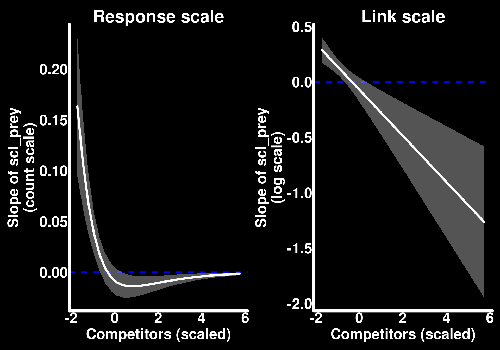
On the link (log) scale, the slope of scl_prey declines in a straight line as competitors increase — that’s the explicit interaction term, additive by construction on the scale the model was fit on. On the response (count) scale, the same decline is visible but curved and compressed toward zero at high competitor density, because low abundance plots have little room left for the slope to move on the count scale (the \[\lambda \cdot \beta\] logic again, now layered on top of an already-declining \[\beta\]). Both panels tell a consistent story — prey only helps when competitors are scarce — but only the link-scale panel isolates that story from the implicit curvature every log-link model carries, which is why the rate-ratio table above is often the cleaner number to report alongside a plot like this one. When we look at the y-axis of the previous plots, the values there are standardized coefficients. These represent the degree to which the count or log(count) change with a one-standard deviation increase in the predictors. However, the x-axis also shows the scaled values of the moderating variable (competitors) which is hard to interpret. We might prefer showing the raw values of competitors instead.
# Same plots as before, but unscale_x() converts the x-axis back to raw competitor counts
p_comp_response_raw <- slopes_prey_by_comp_response |>
mutate(competitors = unscale_x(pop_data$competitors, scl_competitors)) |>
ggplot() +
geom_hline(yintercept = 0, color = "blue", linewidth = 1, linetype = 2) +
geom_ribbon(aes(x = competitors, ymin = conf.low, ymax = conf.high), alpha = 0.4, fill = "lightgrey") +
geom_line(aes(x = competitors, y = estimate), linewidth = 1.5, lineend = "round", color = "white") +
labs(y = "Slope of scl_prey\n(count scale)", x = "Competitors", title = "Response scale")mutate: new variable 'competitors' (double) with 30 unique values and 0% NAp_comp_link_raw <- slopes_prey_by_comp_link |>
mutate(competitors = unscale_x(pop_data$competitors, scl_competitors)) |>
ggplot() +
geom_hline(yintercept = 0, color = "blue", linewidth = 1, linetype = 2) +
geom_ribbon(aes(x = competitors, ymin = conf.low, ymax = conf.high), alpha = 0.4, fill = "lightgrey") +
geom_line(aes(x = competitors, y = estimate), linewidth = 1.5, lineend = "round", color = "white") +
labs(y = "Slope of scl_prey\n(log scale)", x = "Competitors", title = "Link scale")mutate: new variable 'competitors' (double) with 30 unique values and 0% NAp_comp_response_raw + p_comp_link_raw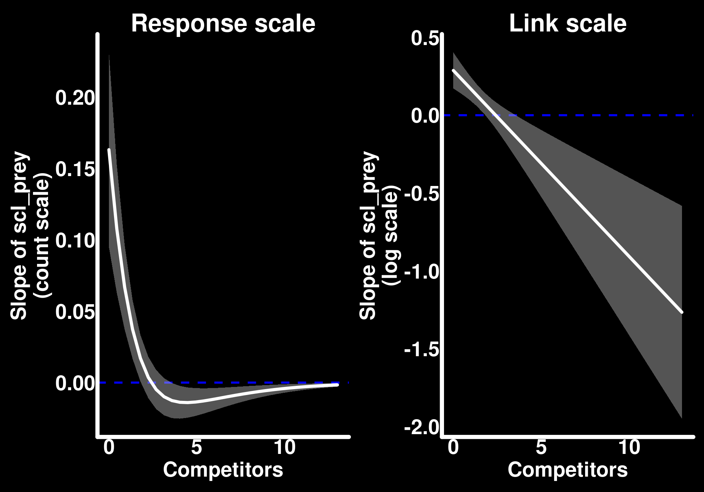
With unscale_x() reversing the standardization, the x-axis now reads in the original units of competitor abundance (individuals), while the y-axis stays on the standardized-prey slope scale from before — the shape of each curve is identical to the scaled version, just relabeled onto a scale that’s easier to communicate.
Predicted abundance across prey and competitors, at five-number-summary values
So far we’ve only ever looked at the interaction through its slope — how steeply abundance changes with prey at a given competitor level. It’s worth also looking directly at the predicted trends themselves, the way we did for the numerical × numerical case in an earlier tutorial: plot predicted abundance against prey, with one line per competitor level, choosing those competitor levels from the moderator’s five-number summary (fivenum()) rather than an arbitrary round number. As before, unscale_x() converts both axes back to their natural, more interpretable units.
# Conditional (abundance-when-present) predictions on a prey grid, one line per competitor
# five-number-summary value; unscale_x() maps back to natural units for plotting
predictions(mod_hu,
newdata = datagrid(
scl_prey = seq(min(pop_data$scl_prey), max(pop_data$scl_prey), length.out = 30),
scl_competitors = fivenum
),
type = "conditional"
) |>
as_tibble() |>
mutate(prey = unscale_x(pop_data$prey, scl_prey),
competitors = round(unscale_x(pop_data$competitors, scl_competitors), 1)) |>
ggplot() +
geom_ribbon(aes(x = prey, ymin = conf.low, ymax = conf.high, fill = as.factor(competitors)), alpha = 0.2) +
geom_line(aes(x = prey, y = estimate, color = as.factor(competitors)), linewidth = 1.5, lineend = "round") +
labs(y = "Predicted abundance\n(when present)", x = "Prey", color = "Competitors", fill = "Competitors")mutate: new variable 'prey' (double) with 30 unique values and 0% NA
new variable 'competitors' (double) with 5 unique values and 0% NA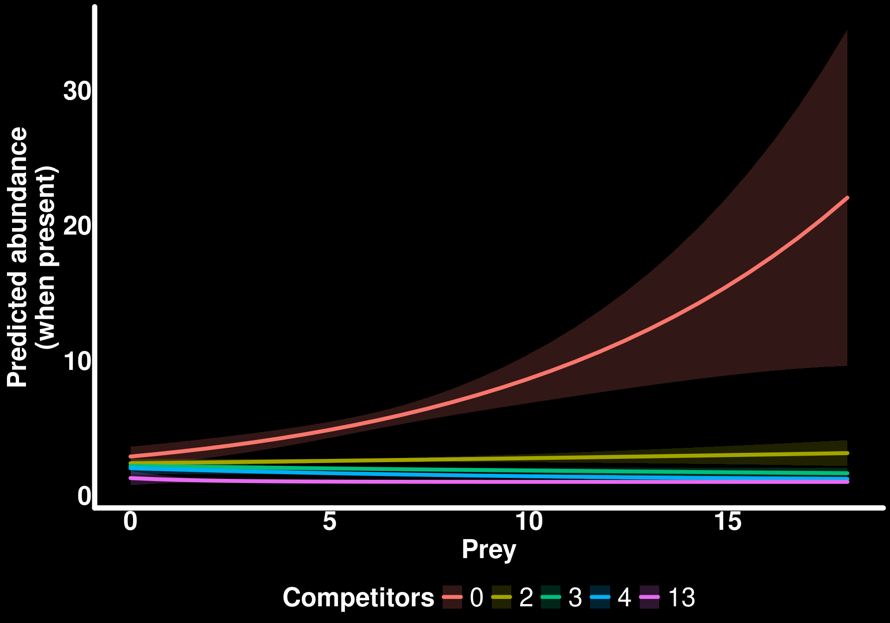
These are type = "conditional" predictions — abundance in plots where the species is already present, exactly like the “when present” curve from the simple hurdle example earlier in this case study. At the lowest observed competitor count (0), predicted abundance climbs steeply and fairly uncertainly as prey increases; by the time competitors reach their 75th-percentile value, the prey curve is nearly flat, mirroring the shrinking count-scale slope we saw above.
The population-scale picture: prey × competitors at low vs. high tree cover
The conditional predictions above only describe abundance given occupancy — they say nothing about whether a plot is occupied in the first place, which is exactly what scl_tree_cov governs in the zero-inflation part of mod_hu. To get the full population-scale picture (type = "response"), we need to also account for tree cover. Just like we did for mod_2 in Case Study 2, we can exploit the fact that tree_cov is bimodal and evaluate predictions separately at its two density peaks, so that “low tree cover” and “high tree cover” plots are each represented by a value that’s actually common in the simulated data, rather than an arbitrary round number.
# Locate the two peaks of tree_cov's bimodal distribution, as scaled values
# (mod_hu's zero-inflation formula uses scl_tree_cov, not tree_cov)
d <- density(pop_data$tree_cov)
peaks <- d$x[which(diff(sign(diff(d$y))) == -2) + 1]
low_tree <- round(peaks[1], 2)
high_tree <- round(peaks[length(peaks)], 2)
low_tree_scl <- scale_x(pop_data$tree_cov)[which.min(abs(pop_data$tree_cov - low_tree))]
high_tree_scl <- scale_x(pop_data$tree_cov)[which.min(abs(pop_data$tree_cov - high_tree))]
# Population-scale ("response") predictions: prey grid x competitor quintiles x tree-cover peaks
predictions(mod_hu,
newdata = datagrid(
scl_prey = seq(min(pop_data$scl_prey), max(pop_data$scl_prey), length.out = 30),
scl_competitors = fivenum,
scl_tree_cov = c(low_tree_scl, high_tree_scl)
),
type = "response"
) |>
as_tibble() |>
mutate(prey = unscale_x(pop_data$prey, scl_prey),
competitors = round(unscale_x(pop_data$competitors, scl_competitors), 1),
`Tree cover` = if_else(scl_tree_cov == low_tree_scl, "Low tree cover", "High tree cover")) |>
ggplot() +
geom_ribbon(aes(x = prey, ymin = conf.low, ymax = conf.high, fill = as.factor(competitors)), alpha = 0.2) +
geom_line(aes(x = prey, y = estimate, color = as.factor(competitors)), linewidth = 1.5, lineend = "round") +
facet_wrap(~ `Tree cover`) +
labs(y = "Predicted population abundance", x = "Prey", color = "Competitors", fill = "Competitors")mutate: new variable 'prey' (double) with 30 unique values and 0% NA
new variable 'competitors' (double) with 5 unique values and 0% NA
new variable 'Tree cover' (character) with 2 unique values and 0% NA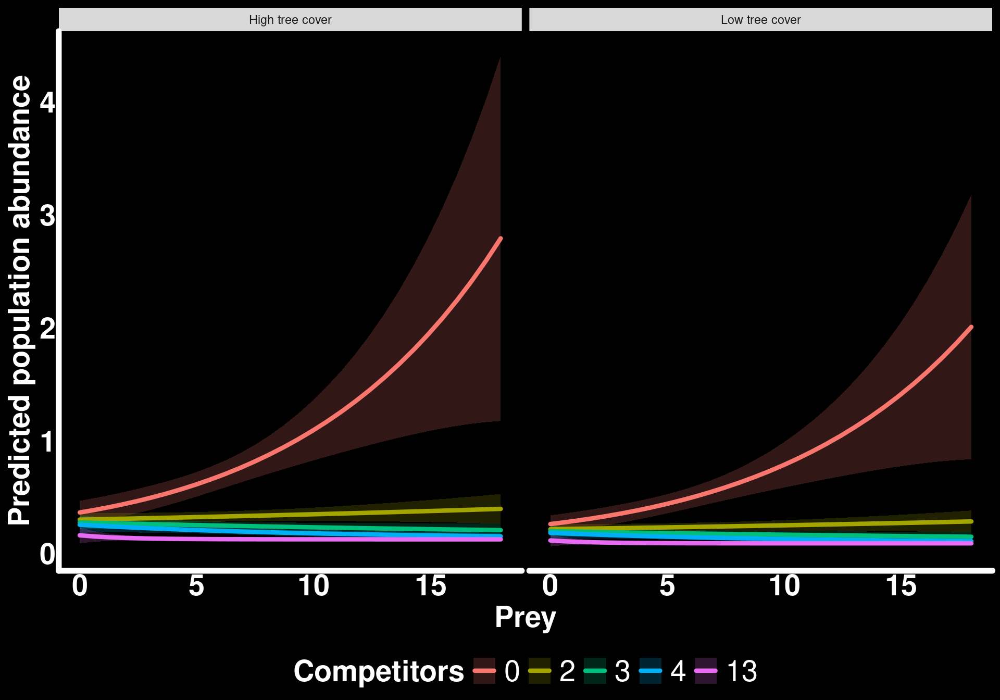
Two things stand out here. First, within each panel, the prey × competitors interaction looks qualitatively the same as it did on the conditional scale above: a steep, uncertain climb with prey when competitors are scarce, flattening out as competitors increase. That’s expected, since population-scale abundance is just conditional abundance scaled down by occupancy probability, and occupancy doesn’t depend on prey or competitors in this model. Second, and more informative, the two panels show overall lower predicted population abundance at low tree cover than at high tree cover, even though the shapes of the curves within each panel are similar — because fewer plots are occupied at all when tree cover is low, pulling every curve down by roughly the same multiplicative factor. In other words, tree cover and the prey × competitors interaction act on largely separate parts of this model: tree cover mostly shifts how many plots have the species at all, while prey and competitors jointly shape abundance within the plots where it does.
A symmetric interaction, viewed from the other predictor
Spake et al. (2023) make a point that’s easy to lose sight of once a plot like the one above has become the “default” way of showing an interaction: a two-way interaction term is, mathematically, perfectly symmetric. scl_prey:scl_competitors is the exact same coefficient as scl_competitors:scl_prey — there is no sense in which the model treats prey as “the” focal variable and competitors as “the” moderator, or vice versa. That choice is entirely ours, made for narrative convenience (we picked prey as the x-axis because the conservation question was framed around “how much does prey availability help”), not because the statistics privilege one direction over the other. Spake et al. flag this as a common source of asymmetric or incomplete interaction reporting: papers will show (and discuss at length) the effect of A moderated by B, but never show the mathematically identical effect of B moderated by A, even though the two views can highlight different, equally valid practical takeaways.
Here, showing the interaction the other way around — competitors on the x-axis, with one line per level of prey’s five-number summary — makes a point that’s much harder to see in the prey-on-the-x-axis version: regardless of how much prey is available, a sufficiently high density of competitors drives expected abundance down to roughly the same low floor. The lines, which fan out dramatically at low competitor density (echoing the steep low-competitor slopes we found earlier), converge almost on top of each other once competitors exceed about 4–5 individuals.
# Same idea with axes swapped: competitors on x, one line per prey five-number-summary value
# (conditional = abundance when present)
predictions(mod_hu,
newdata = datagrid(
scl_competitors = seq(min(pop_data$scl_competitors), max(pop_data$scl_competitors), length.out = 30),
scl_prey = fivenum
),
type = "conditional"
) |>
as_tibble() |>
mutate(competitors = unscale_x(pop_data$competitors, scl_competitors),
prey = round(unscale_x(pop_data$prey, scl_prey), 1)) |>
ggplot() +
geom_ribbon(aes(x = competitors, ymin = conf.low, ymax = conf.high, fill = as.factor(prey)), alpha = 0.2) +
geom_line(aes(x = competitors, y = estimate, color = as.factor(prey)), linewidth = 1.5, lineend = "round") +
labs(y = "Predicted abundance\n(when present)", x = "Competitors", color = "Prey", fill = "Prey")mutate: new variable 'competitors' (double) with 30 unique values and 0% NA
new variable 'prey' (double) with 5 unique values and 0% NA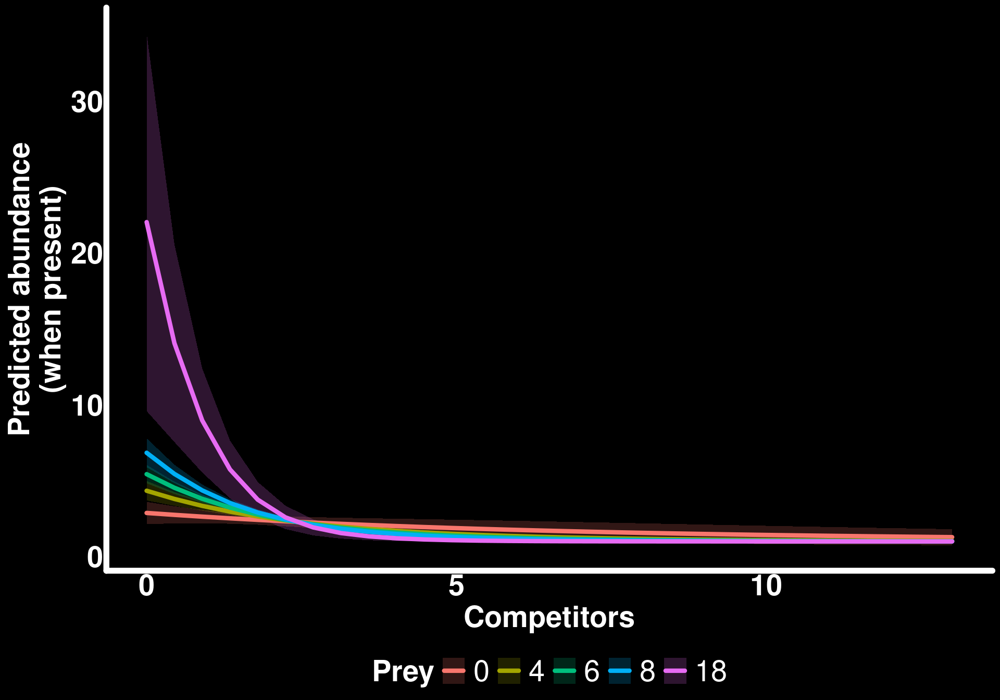
Both this plot and the prey-on-the-x-axis version a few sections back are legitimate, complete descriptions of the exact same fitted interaction — neither one is “more correct.” But they emphasize different conservation-relevant messages: the prey-focused framing emphasizes that boosting prey only helps when competitors are already scarce, while the competitor-focused framing emphasizes that reducing competitors is what reliably moves abundance, almost regardless of how much prey is available. Reporting only one direction, as Spake et al. caution, risks leaving a reader with just half of a symmetric effect.
Average predictions: collapsing the interaction into one curve per predictor
Everything up to this point has described the interaction conditionally — the effect of prey at a specific level of competitors, or vice versa. Sometimes we instead want a single summary curve per predictor that integrates over the other predictor’s (and tree cover’s) observed distribution, the same “average effect” idea from avg_predictions()/avg_slopes() that we used for mod_1 back in Case Study 1 — there, a one-line call like avg_predictions(mod_1, variables = "tree_cov") was all we needed. Here, we instead build the grid explicitly with datagrid(..., grid_type = "counterfactual") before handing it to avg_predictions(..., by = "scl_prey"). Why the extra step, and is it actually doing something different?
It’s worth checking directly, because the two approaches can look deceptively similar. avg_predictions(variables = "focal") is really shorthand: internally, it builds a grid that crosses the requested sequence of the focal variable against every observed row of the data — exactly a counterfactual grid — and then averages the resulting predictions within each focal value. That’s a different (and, for our purposes, more correct) procedure than simply calling datagrid(focal = seq(...)) by itself, which instead holds every other predictor fixed at a single representative value (the mean, for numeric predictors) and gives you the prediction at that one point, not an average over the sample. We can see the gap between these two directly using mod_1, which has no explicit interaction:
# avg_predictions(variables = "tree_cov"), the shorthand we used in Case Study 1
# Counterfactual grid: each focal value is paired with EVERY observed row of the data,
# so predictions are averaged over the real distribution of the other predictors.
# 1) the shorthand used in Case Study 1
shorthand_avg <- avg_predictions(mod_1, variables = "tree_cov", type = "response") |>
as_tibble() |>
select(tree_cov, estimate, conf.low, conf.high)select: dropped 5 variables (std.error, statistic, p.value, s.value, df)# The same thing, spelled out explicitly with grid_type = "counterfactual"
counterfactual_avg <- avg_predictions(mod_1,
newdata = datagrid(model = mod_1, tree_cov = sort(unique(shorthand_avg$tree_cov)), grid_type = "counterfactual"),
by = "tree_cov", type = "response"
) |> as_tibble() |> select(tree_cov, estimate, conf.low, conf.high)select: dropped 5 variables (std.error, statistic, p.value, s.value, df)# Contrast: a *plain* datagrid(), which holds rain and temp at their mean instead of averaging over them
mean_held_avg <- avg_predictions(mod_1,
newdata = datagrid(model = mod_1, tree_cov = sort(unique(shorthand_avg$tree_cov))),
by = "tree_cov", type = "response"
) |> as_tibble() |> select(tree_cov, estimate, conf.low, conf.high)select: dropped 5 variables (std.error, statistic, p.value, s.value, df)shorthand_avg# A tibble: 5 × 4
tree_cov estimate conf.low conf.high
<dbl> <dbl> <dbl> <dbl>
1 0.00000931 0.275 0.179 0.372
2 0.104 0.313 0.222 0.403
3 0.541 0.491 0.421 0.560
4 0.896 0.640 0.548 0.732
5 1.000 0.681 0.580 0.781counterfactual_avg# A tibble: 5 × 4
tree_cov estimate conf.low conf.high
<dbl> <dbl> <dbl> <dbl>
1 0.00000931 0.275 0.179 0.372
2 0.104 0.313 0.222 0.403
3 0.541 0.491 0.421 0.560
4 0.896 0.640 0.548 0.732
5 1.000 0.681 0.580 0.781mean_held_avg# A tibble: 5 × 4
tree_cov estimate conf.low conf.high
<dbl> <dbl> <dbl> <dbl>
1 0.00000931 0.260 0.158 0.362
2 0.104 0.299 0.203 0.396
3 0.541 0.492 0.416 0.567
4 0.896 0.653 0.554 0.751
5 1.000 0.695 0.589 0.801The first two tables are identical: avg_predictions(variables = "tree_cov") and the explicit counterfactual-grid version are computing exactly the same thing, confirming that variables = "focal" was already doing counterfactual averaging under the hood all along. The third table, built from a plain datagrid() that holds rain and temp at their means, is close but not identical — here the discrepancy is small because mod_1 has no interaction, so the slope of tree_cov barely changes across the range of rain and temp (the “implicit interaction” from Case Study 1 is weak for this particular predictor pair).
So why spell out grid_type = "counterfactual" explicitly for mod_hu instead of using the variables = "focal" shorthand, if the two are the same? Purely a practical reason: the shorthand’s automatic sequence of focal values is a fixed default (a short grid of representative points), whereas we wanted a smooth 30-point sequence spanning the full observed range of prey and competitors for plotting, and datagrid() is how you specify that. The averaging is identical either way — for a model without any explicit interaction (like mod_1), the choice barely matters in practice, but for mod_hu, where prey’s effect on abundance genuinely depends on competitor density, it matters more that the average is a true average over the observed joint distribution of competitors and tree cover, not a slope evaluated at their means.
When present (conditional scale)
# Average prey curve (abundance when present): averaged over all observed competitors and tree cover
avg_pred_prey_cond <- avg_predictions(mod_hu,
newdata = datagrid(model = mod_hu,
scl_prey = seq(min(pop_data$scl_prey), max(pop_data$scl_prey), length.out = 30),
grid_type = "counterfactual"),
by = "scl_prey", type = "conditional"
) |> as_tibble() |>
mutate(prey = unscale_x(pop_data$prey, scl_prey))mutate: new variable 'prey' (double) with 30 unique values and 0% NA# Same for competitors, averaged over observed prey
avg_pred_comp_cond <- avg_predictions(mod_hu,
newdata = datagrid(model = mod_hu,
scl_competitors = seq(min(pop_data$scl_competitors), max(pop_data$scl_competitors), length.out = 30),
grid_type = "counterfactual"),
by = "scl_competitors", type = "conditional"
) |> as_tibble() |>
mutate(competitors = unscale_x(pop_data$competitors, scl_competitors))mutate: new variable 'competitors' (double) with 30 unique values and 0% NAp_avg_prey_cond <- avg_pred_prey_cond |>
ggplot() +
geom_ribbon(aes(x = prey, ymin = conf.low, ymax = conf.high), fill = "white", alpha = 0.2) +
geom_line(aes(x = prey, y = estimate), color = "white", linewidth = 1.5, lineend = "round") +
labs(y = "Average predicted abundance\n(when present)", x = "Prey")
p_avg_comp_cond <- avg_pred_comp_cond |>
ggplot() +
geom_ribbon(aes(x = competitors, ymin = conf.low, ymax = conf.high), fill = "white", alpha = 0.2) +
geom_line(aes(x = competitors, y = estimate), color = "white", linewidth = 1.5, lineend = "round") +
labs(y = "Average predicted abundance\n(when present)", x = "Competitors")
p_avg_prey_cond + p_avg_comp_cond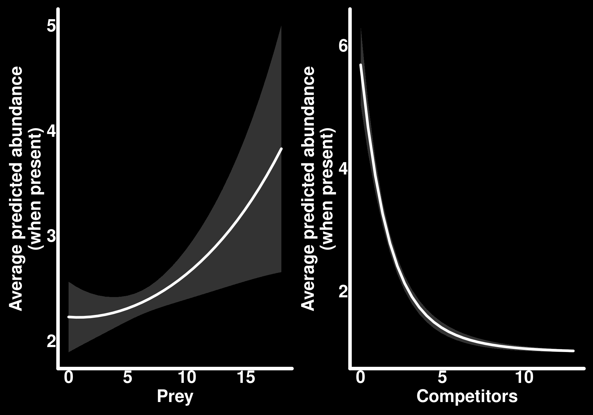
Averaged over the full range of competitors actually observed, prey still shows a positive, accelerating relationship with abundance (when present) — unsurprising, since we saw above that prey only loses its positive effect once competitors get reasonably dense, and most simulated plots have more modest competitor counts. Competitors, averaged over the full observed range of prey, show a steep decline that flattens out: a textbook diminishing-returns (or diminishing-harm) shape once competitor density is already high.
Population-wide (response scale), at low vs. high tree cover
The same averaging logic applies on the population scale, where we again take advantage of tree_cov’s two density peaks to compare “low tree cover” and “high tree cover” populations directly, each curve now representing the average effect of prey (or competitors) across the full observed range of the other predictor.
# Population-scale average curves, kept separate for the two tree-cover peaks
# (response = occupancy x abundance when present)
avg_pred_prey_resp <- avg_predictions(mod_hu,
newdata = datagrid(model = mod_hu,
scl_prey = seq(min(pop_data$scl_prey), max(pop_data$scl_prey), length.out = 30),
scl_tree_cov = c(low_tree_scl, high_tree_scl),
grid_type = "counterfactual"),
by = c("scl_prey", "scl_tree_cov"), type = "response"
) |> as_tibble() |>
mutate(prey = unscale_x(pop_data$prey, scl_prey),
`Tree cover` = if_else(scl_tree_cov == low_tree_scl, "Low tree cover", "High tree cover"))mutate: new variable 'prey' (double) with 30 unique values and 0% NA
new variable 'Tree cover' (character) with 2 unique values and 0% NAavg_pred_comp_resp <- avg_predictions(mod_hu,
newdata = datagrid(model = mod_hu,
scl_competitors = seq(min(pop_data$scl_competitors), max(pop_data$scl_competitors), length.out = 30),
scl_tree_cov = c(low_tree_scl, high_tree_scl),
grid_type = "counterfactual"),
by = c("scl_competitors", "scl_tree_cov"), type = "response"
) |> as_tibble() |>
mutate(competitors = unscale_x(pop_data$competitors, scl_competitors),
`Tree cover` = if_else(scl_tree_cov == low_tree_scl, "Low tree cover", "High tree cover"))mutate: new variable 'competitors' (double) with 30 unique values and 0% NA
new variable 'Tree cover' (character) with 2 unique values and 0% NAp_avg_prey_resp <- avg_pred_prey_resp |>
ggplot(aes(x = prey, y = estimate, color = `Tree cover`, fill = `Tree cover`)) +
geom_ribbon(aes(ymin = conf.low, ymax = conf.high), alpha = 0.2, color = NA) +
geom_line(linewidth = 1.5, lineend = "round") +
labs(y = "Average predicted\npopulation abundance", x = "Prey")
p_avg_comp_resp <- avg_pred_comp_resp |>
ggplot(aes(x = competitors, y = estimate, color = `Tree cover`, fill = `Tree cover`)) +
geom_ribbon(aes(ymin = conf.low, ymax = conf.high), alpha = 0.2, color = NA) +
geom_line(linewidth = 1.5, lineend = "round") +
labs(y = "Average predicted\npopulation abundance", x = "Competitors")
p_avg_prey_resp + p_avg_comp_resp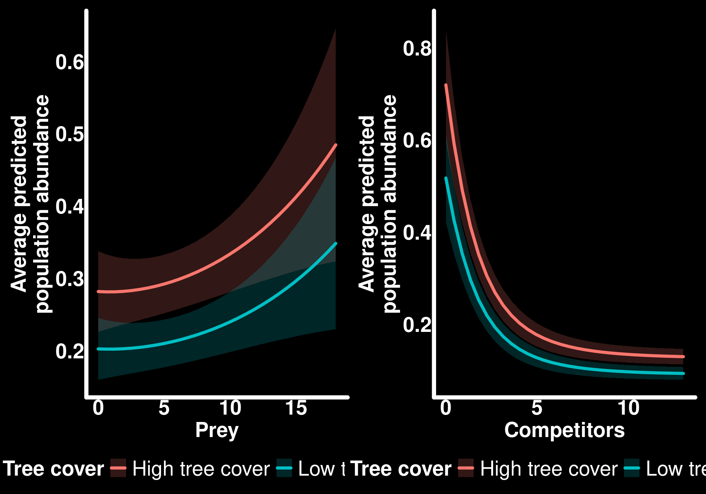
As in the fivenum-by-tree-cover plot earlier, the shapes of the prey and competitors curves are essentially unchanged between the two tree-cover panels — the interaction with prey/competitors lives entirely in the conditional (truncated-Poisson) part of the model, which doesn’t know anything about tree cover. What does change is the overall height of the curves: high-tree-cover populations sit consistently above low-tree-cover ones, because more plots are occupied in the first place when tree cover is high. The gap between the two Tree cover lines is therefore a pure occupancy effect, while the shape of each individual line is a pure abundance-when-present effect — a nice visual confirmation that this hurdle model keeps the two processes cleanly separated.
Average effect for the population, across all tree cover values
Finally, if we don’t want to split by tree cover at all — for instance, because our research question is about the overall population response rather than a tree-cover-specific one — we can let grid_type = "counterfactual" integrate over the full observed distribution of tree_cov as well, giving one population-scale curve per predictor that already reflects the mix of low- and high-tree-cover plots actually present in the data.
# Population-scale average curves, averaging over ALL observed tree cover values too
avg_pred_prey_resp_all <- avg_predictions(mod_hu,
newdata = datagrid(model = mod_hu,
scl_prey = seq(min(pop_data$scl_prey), max(pop_data$scl_prey), length.out = 30),
grid_type = "counterfactual"),
by = "scl_prey", type = "response"
) |> as_tibble() |>
mutate(prey = unscale_x(pop_data$prey, scl_prey))mutate: new variable 'prey' (double) with 30 unique values and 0% NAavg_pred_comp_resp_all <- avg_predictions(mod_hu,
newdata = datagrid(model = mod_hu,
scl_competitors = seq(min(pop_data$scl_competitors), max(pop_data$scl_competitors), length.out = 30),
grid_type = "counterfactual"),
by = "scl_competitors", type = "response"
) |> as_tibble() |>
mutate(competitors = unscale_x(pop_data$competitors, scl_competitors))mutate: new variable 'competitors' (double) with 30 unique values and 0% NAp_avg_prey_resp_all <- avg_pred_prey_resp_all |>
ggplot() +
geom_ribbon(aes(x = prey, ymin = conf.low, ymax = conf.high), fill = "white", alpha = 0.2) +
geom_line(aes(x = prey, y = estimate), color = "white", linewidth = 1.5, lineend = "round") +
labs(y = "Average predicted population\nabundance (all tree cover)", x = "Prey")
p_avg_comp_resp_all <- avg_pred_comp_resp_all |>
ggplot() +
geom_ribbon(aes(x = competitors, ymin = conf.low, ymax = conf.high), fill = "white", alpha = 0.2) +
geom_line(aes(x = competitors, y = estimate), color = "white", linewidth = 1.5, lineend = "round") +
labs(y = "Average predicted population\nabundance (all tree cover)", x = "Competitors")
p_avg_prey_resp_all + p_avg_comp_resp_all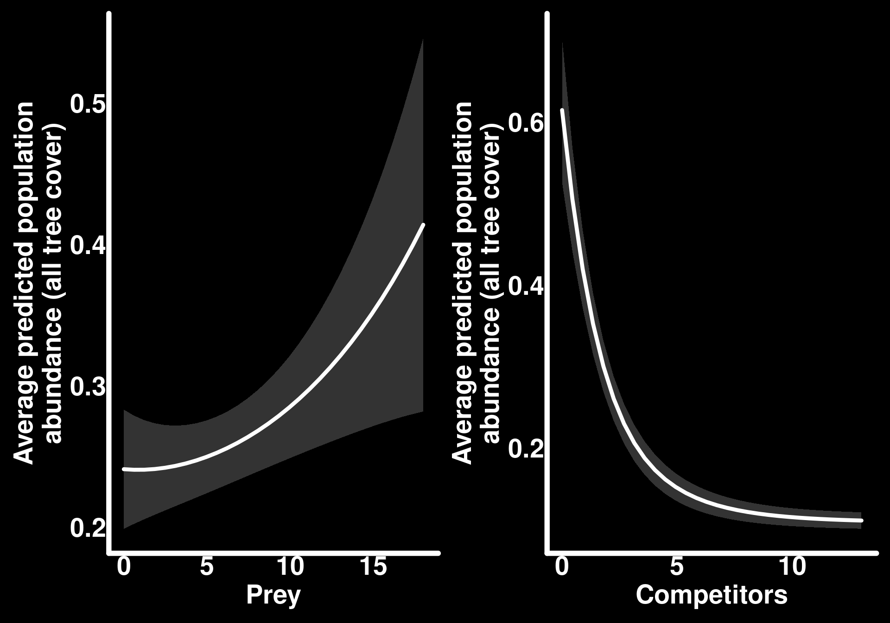
These two curves are what we’d report if a reviewer asked for “the” effect of prey or competitors on population abundance, without reference to tree cover at all: each one is a single number (or curve) that already has tree cover’s bimodal distribution baked in, roughly splitting the difference between the low- and high-tree-cover curves from the previous plot, weighted by how common each kind of plot actually is in the simulated sample. Compared to the “when present” curves above, both are compressed toward zero and flatter in absolute terms, since every point on these curves also carries the (roughly 14%) chance that the plot isn’t occupied at all.
We can apply the exact same counterfactual-averaging logic to tree cover itself, this time integrating over the full observed distribution of prey and competitors instead of holding them fixed.
# Average population-scale prediction across tree cover (affects only the zero-inflation part)
avg_pred_tree_resp_all <- avg_predictions(mod_hu,
newdata = datagrid(model = mod_hu,
scl_tree_cov = seq(min(pop_data$scl_tree_cov), max(pop_data$scl_tree_cov), length.out = 30),
grid_type = "counterfactual"),
by = "scl_tree_cov", type = "response"
) |> as_tibble() |>
mutate(tree_cov = unscale_x(pop_data$tree_cov, scl_tree_cov))mutate: new variable 'tree_cov' (double) with 30 unique values and 0% NAavg_pred_tree_resp_all |>
ggplot() +
geom_ribbon(aes(x = tree_cov, ymin = conf.low, ymax = conf.high), fill = "white", alpha = 0.2) +
geom_line(aes(x = tree_cov, y = estimate), color = "white", linewidth = 1.5, lineend = "round") +
labs(y = "Average predicted population\nabundance", x = "Tree cover")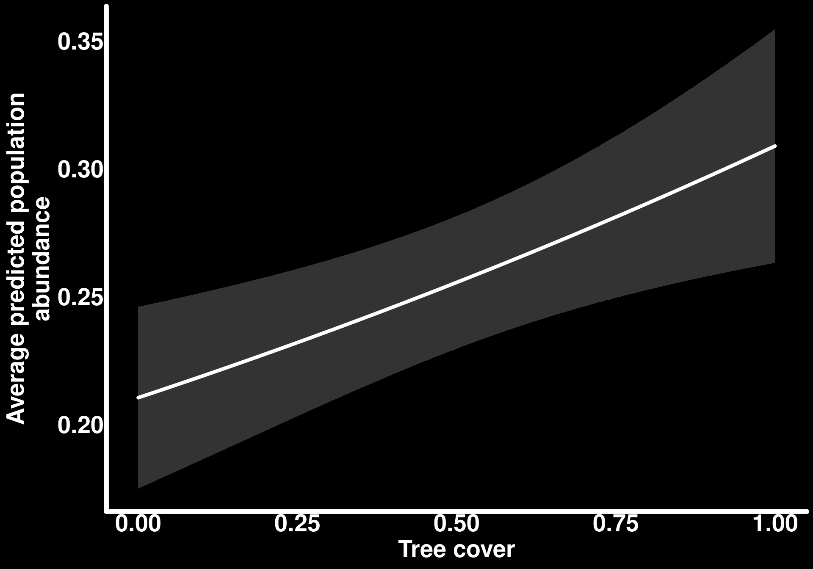
Unlike the prey and competitors curves above, this one isn’t flattened by averaging over an interaction — tree cover doesn’t interact with anything in mod_hu, it only ever appears in the zero-inflation formula. The steady, roughly linear rise here is therefore a clean population-scale read-out of tree cover’s effect on occupancy alone: going from no tree cover to full tree cover is associated with expected population abundance increasing from about 0.23 to 0.37 individuals per plot, averaged over the full observed range of prey and competitor abundance. That’s a useful contrast with the prey and competitors curves just above — this one shows what it looks like to average over an interaction-free predictor, where there’s no risk of the averaging masking different effects at different levels of some other variable.
This is A LOT of figures and information. And we have not even plotted these effects on the rate-ratio scale or log-odds scale. What should we report in our publication? This all depends on the research question. If we want to make recommendations about how we can better conserve our species by acting on either of the three variables we focused on, we could report the figures we have generated above which relate more to raw abundance increase. To answer questions relating to how these variables affect population dynamics (on a rate scale), we could report these in the form of a table as these rates are assumed to be linear in these models and are thus easier to interpret in a table form compared to potentially non-linear relationships on the probability and count scales.
A full rate-ratio results table, by model component
Let’s build that table, following the same approach as mod2_tbl in Case Study 2: pull every fixed-effect slope on the link scale and exponentiate it into a rate ratio, keeping coefficients standardized throughout so they’re directly comparable to one another. mod_hu has two components — the conditional (truncated-Poisson) part describing abundance when present, and the zero-inflation (binomial) part describing occupancy — so we report rate ratios separately for each, with a clear label for which component (and, where relevant, which moderator value) each row describes.
For scl_tree_cov in the zero-inflation part, a quick note on interpretation: glmmTMB’s zero-inflation formula models the probability of a structural zero (the plot being unsuitable/unoccupied), not the probability of occurrence directly. So exp() of that coefficient is an odds ratio for becoming a structural zero, not a rate ratio for abundance — a rate ratio below 1 here means higher tree cover is associated with lower odds of the plot being a structural zero, i.e. higher occupancy, consistent with how we simulated the data.
Because scl_prey and scl_competitors interact, neither has a single rate ratio that applies everywhere — exactly the implicit-interaction-on-top-of-explicit-interaction idea from earlier in this case study. So, following the same scheme we used for temp’s effect at low vs. high tree cover back in Case Study 2, we report each one’s rate ratio at three representative levels of the other (-1 SD, 0 SD, +1 SD), plus the interaction term itself — the ratio of these rate ratios per 1-SD increase in the moderator — as a single row that doesn’t depend on where the other predictor is evaluated.
# Goal: one rate-ratio table for mod_hu, with a Component column for each model part.
# avg_slopes(type = "link") gives log-scale slopes; exp() converts them to rate ratios.
# Conditional-model rate ratio for scl_prey, at three levels of scl_competitors
prey_rr_tbl <- avg_slopes(mod_hu, variables = "scl_prey", by = "scl_competitors",
newdata = datagrid(scl_competitors = c(-1, 0, 1)),
type = "link") |>
as_tibble() |>
mutate(rate_ratio = exp(estimate), rr_low = exp(conf.low), rr_high = exp(conf.high),
Term = glue::glue("scl_prey (at scl_competitors = {scl_competitors} SD)")) |>
select(Term, rate_ratio, rr_low, rr_high, p.value)mutate: new variable 'rate_ratio' (double) with 3 unique values and 0% NA
new variable 'rr_low' (double) with 3 unique values and 0% NA
new variable 'rr_high' (double) with 3 unique values and 0% NA
new variable 'Term' (character) with 3 unique values and 0% NA
select: dropped 9 variables (term, contrast, scl_competitors, estimate, std.error, …)# Conditional-model rate ratio for scl_competitors, at three levels of scl_prey
comp_rr_tbl <- avg_slopes(mod_hu, variables = "scl_competitors", by = "scl_prey",
newdata = datagrid(scl_prey = c(-1, 0, 1)),
type = "link") |>
as_tibble() |>
mutate(rate_ratio = exp(estimate), rr_low = exp(conf.low), rr_high = exp(conf.high),
Term = glue::glue("scl_competitors (at scl_prey = {scl_prey} SD)")) |>
select(Term, rate_ratio, rr_low, rr_high, p.value)mutate: new variable 'rate_ratio' (double) with 3 unique values and 0% NA
new variable 'rr_low' (double) with 3 unique values and 0% NA
new variable 'rr_high' (double) with 3 unique values and 0% NA
new variable 'Term' (character) with 3 unique values and 0% NA
select: dropped 9 variables (term, contrast, scl_prey, estimate, std.error, …)# The interaction itself: ratio of rate ratios per 1-SD increase in the moderator,
# constant regardless of where the other predictor is evaluated
hu_confint <- confint(mod_hu)
hu_coef_cond <- summary(mod_hu)$coefficients$cond
hu_coef_zi <- summary(mod_hu)$coefficients$zi
interaction_rr_tbl <- tibble(
Term = "scl_prey:scl_competitors (interaction)",
rate_ratio = exp(hu_coef_cond["scl_prey:scl_competitors", "Estimate"]),
rr_low = exp(hu_confint["cond.scl_prey:scl_competitors", "2.5 %"]),
rr_high = exp(hu_confint["cond.scl_prey:scl_competitors", "97.5 %"]),
p.value = hu_coef_cond["scl_prey:scl_competitors", "Pr(>|z|)"]
)
# Zero-inflation-model odds ratio for scl_tree_cov (no moderator: tree cover
# doesn't interact with anything in this model)
zi_rr_tbl <- tibble(
Term = "scl_tree_cov (zero-inflation)",
rate_ratio = exp(hu_coef_zi["scl_tree_cov", "Estimate"]),
rr_low = exp(hu_confint["zi.scl_tree_cov", "2.5 %"]),
rr_high = exp(hu_confint["zi.scl_tree_cov", "97.5 %"]),
p.value = hu_coef_zi["scl_tree_cov", "Pr(>|z|)"]
)
# Combine the four pieces, round, format CIs, and keep a tidy set of columns
hu_rr_tbl <- bind_rows(
prey_rr_tbl |> mutate(Component = "Conditional (abundance, when present)"),
comp_rr_tbl |> mutate(Component = "Conditional (abundance, when present)"),
interaction_rr_tbl |> mutate(Component = "Conditional (abundance, when present)"),
zi_rr_tbl |> mutate(Component = "Zero-inflation (occupancy, as an odds ratio)")
) |>
relocate(Component) |>
mutate(
across(c(rate_ratio, rr_low, rr_high), ~ round(.x, 3)),
p.value = if_else(p.value < 0.001, "<0.001", as.character(round(p.value, 3))),
CI_95 = glue::glue("[{rr_low}, {rr_high}]")
) |>
select(Component, Term, `Rate/odds ratio` = rate_ratio, `95% CI` = CI_95, `p-value` = p.value)mutate: new variable 'Component' (character) with one unique value and 0% NA
mutate: new variable 'Component' (character) with one unique value and 0% NA
mutate: new variable 'Component' (character) with one unique value and 0% NA
mutate: new variable 'Component' (character) with one unique value and 0% NA
relocate: columns reordered (Component, Term, rate_ratio, rr_low, rr_high, …)
mutate: changed 8 values (100%) of 'rate_ratio' (0 new NAs)
changed 8 values (100%) of 'rr_low' (0 new NAs)
changed 8 values (100%) of 'rr_high' (0 new NAs)
converted 'p.value' from double to character (0 new NA)
new variable 'CI_95' (character) with 8 unique values and 0% NA
select: renamed 3 variables (Rate/odds ratio, 95% CI, p-value) and dropped 2 variables# Render with tt(); style_tt() draws a rule where the Component changes
hu_rr_tbl |>
tt(caption = "Standardized rate ratios (conditional model) and odds ratio (zero-inflation model) for mod_hu") |>
style_tt(i = which(hu_rr_tbl$Component != dplyr::lag(hu_rr_tbl$Component, default = "")) - 1,
j = 1:5, line = "b", line_color = "black", line_width = 0.05)| Component | Term | Rate/odds ratio | 95% CI | p-value |
|---|---|---|---|---|
| Conditional (abundance, when present) | scl_prey (at scl_competitors = -1 SD) | 1.149 | [1.07, 1.233] | <0.001 |
| Conditional (abundance, when present) | scl_prey (at scl_competitors = 0 SD) | 0.933 | [0.837, 1.04] | 0.209 |
| Conditional (abundance, when present) | scl_prey (at scl_competitors = 1 SD) | 0.757 | [0.62, 0.925] | 0.007 |
| Conditional (abundance, when present) | scl_competitors (at scl_prey = -1 SD) | 0.594 | [0.517, 0.682] | <0.001 |
| Conditional (abundance, when present) | scl_competitors (at scl_prey = 0 SD) | 0.482 | [0.437, 0.533] | <0.001 |
| Conditional (abundance, when present) | scl_competitors (at scl_prey = 1 SD) | 0.392 | [0.338, 0.454] | <0.001 |
| Conditional (abundance, when present) | scl_prey:scl_competitors (interaction) | 0.812 | [0.732, 0.901] | <0.001 |
| Zero-inflation (occupancy, as an odds ratio) | scl_tree_cov (zero-inflation) | 0.854 | [0.772, 0.944] | 0.002 |
Reading this table component by component: in the conditional (abundance-when-present) part, scl_prey‘s rate ratio shrinks from about 1.24 at low competitor density down to about 0.81 at high competitor density — crossing 1 somewhere around average competitor density, which is why its “main effect” row back in summary(mod_hu) looked like noise (estimate ≈ 0, p ≈ 0.95). scl_competitors’s rate ratio is below 1 at every level of prey we checked, but gets progressively further from 1 (stronger suppression) as prey increases — competitors matter more when there’s more prey worth competing over. The interaction row (≈0.81, CI excluding 1) is the single number behind both of those patterns: for every 1-SD increase in competitors, prey’s rate ratio gets multiplied by about 0.81 (and symmetrically, for every 1-SD increase in prey, competitors’ rate ratio gets multiplied by the same 0.81 — the symmetry point from earlier in this case study, right there in the table). In the zero-inflation part, scl_tree_cov’s odds ratio (≈0.82, CI excluding 1) tells a simpler, interaction-free story: each 1-SD increase in tree cover is associated with about an 18% reduction in the odds that a plot is a structural zero, i.e., higher occupancy — consistent with the steady rise we saw in the population-scale tree-cover prediction curve above.
Summary and Key Takeaways
What we learned
Link functions create implicit interactions: Even without an explicit interaction term, a non-linear link function (logit, log, …) makes every predictor’s effect on the response scale depend on the values of all the other predictors. This is purely a consequence of the curvature of the link, not evidence of a “real” interaction in the data-generating process.
The scale you report on changes what you see: On the link scale, effects are additive and (without an explicit interaction term) perfectly flat across the other predictors. On the response scale, the same model can show a strongly curving, moderator-dependent effect. Whether an interaction “exists” can depend entirely on which scale you ask the question on (Spake et al.’s additive vs. multiplicative distinction).
Local slopes vs. scale-invariant ratios: A response-scale slope (e.g., individuals per unit of a predictor, or probability points per unit) only applies at the specific covariate values it was evaluated at. A rate ratio \[e^\beta\] odds ratio, etc. on the link scale is constant everywhere on the curve, which makes it a natural summary number when you want one value per predictor that doesn’t depend on where the other predictors are set — at the cost of being harder to translate into a concrete “how many individuals” statement.
Interactions are symmetric: A two-way interaction term describes a single, mathematically symmetric relationship between two predictors. Showing only “A moderated by B” and never “B moderated by A” risks reporting just half of the story, even though both views are equally valid and can emphasize different practical conclusions.
Hurdle and zero-inflated models split a response into separate processes: A hurdle model lets us interpret the occurrence (binomial) and abundance-when-present (truncated count) parts separately, each with its own predictors and link function, or combine them into a single population-scale prediction (occurrence probability × conditional abundance). Both views are useful, depending on whether the research question is about presence, abundance given presence, or abundance across the whole landscape.
Tools for interpretation
slopes()/avg_slopes()withtype = "response"vs.type = "link": Compare a predictor’s effect on the natural (probability, count) scale against its effect on the scale the model is additive on.predictions()/avg_predictions()withtype = "conditional","response", or"zprob": For hurdle/zero-inflated models, get predictions from just the count part, the full population-scale combination, or the probability of a structural zero.datagrid(..., grid_type = "counterfactual"): Average predictions or slopes over the observed distribution of the other predictors, rather than holding them at a single representative value (e.g., their mean).- Exponentiating link-scale slopes (
exp(estimate)): Turn a log-odds or log-count coefficient into an odds ratio or rate ratio that stays constant regardless of where the other predictors are evaluated. fivenum()and density peaks (density()): Choose informative, data-driven values of a moderator (e.g., for faceting or line colors) instead of arbitrary round numbers, especially for bimodal predictors like tree cover in this tutorial.
In the next part of this series, we will look at interactions in generalized additive models (GAMs), where the response surface can bend in ways that a linear or polynomial interaction term cannot capture.